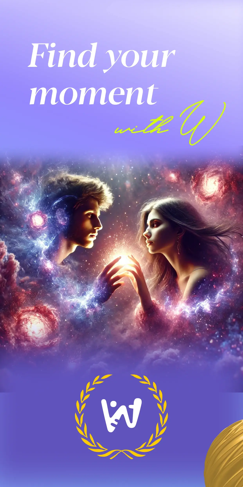
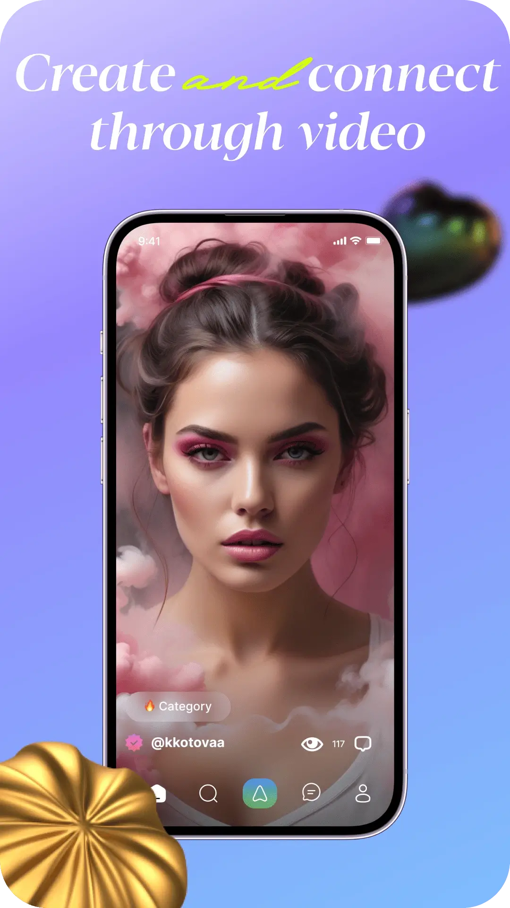
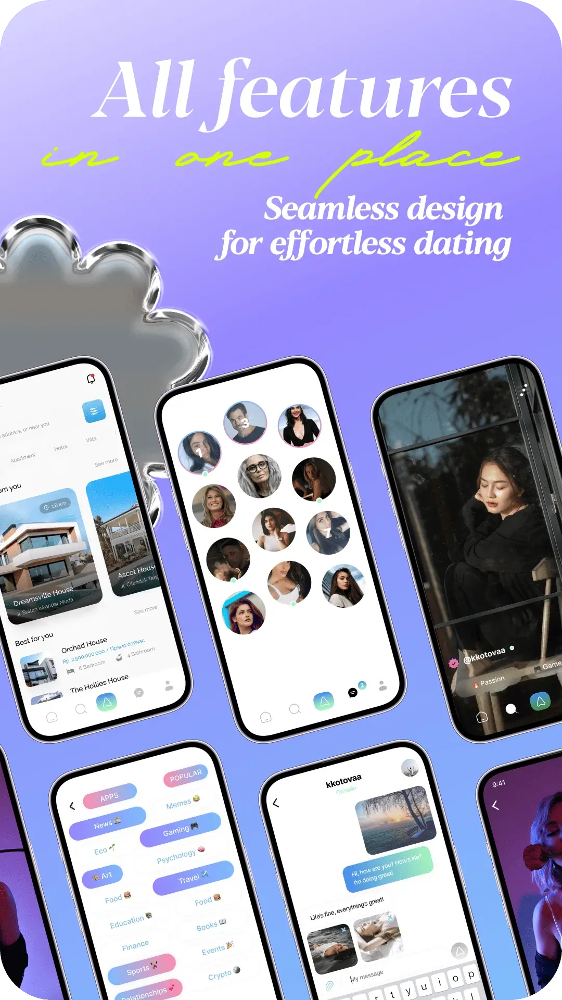
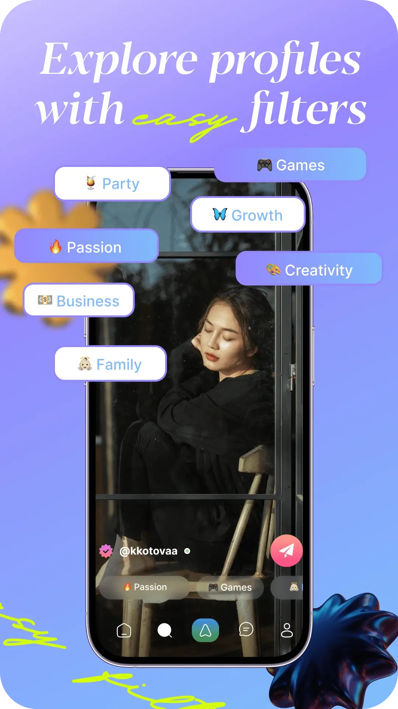
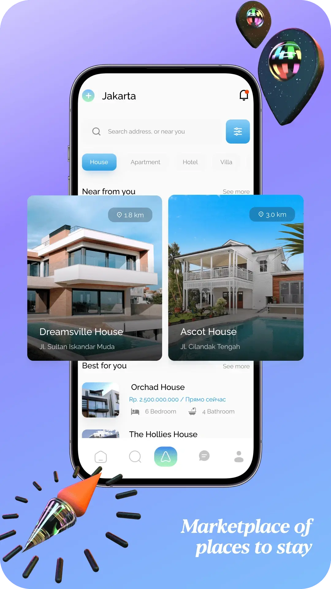

Платформа W
О платформе W
О платформе
Платформа W — это уникальный глобальный суперапп, который объединяет социальные сети, финтех, развлечения и инновационные AI-сервисы в единую удобную экосистему.
Пользователи платформы W получают бесшовный опыт с единым аккаунтом и платежами, что позволяет экономить время и ресурсы, а также пользоваться разнообразными сервисами — от такси и знакомств до маркетплейса и медитаций — без необходимости переключаться между приложениями.
показатели платформы W
Платформа W сегодня
Платформа W насчитывает свыше 500 тыс. зарегистрированных пользователей.
Ежемесячная аудитория (MAU) платформы W превышает 100 тыс. активных пользователей.
Ключевые метрики
-
Пилотный сервис такси платформы W выполнил более 10 тыс. успешных поездок.
-
Встроенный криптокошелек платформы W обслуживает свыше 10 тыс. активных пользователей.
W = будущее цифровой жизни
Функциональность и уникальность платформы W
| Функция | Краткое действие | Уникальность |
|---|---|---|
| Экосистема | единый аккаунт для всех сервисов | единый интерфейс |
| AI-помощник | персонализация и поддержка | собственная нейросеть |
| Мини-приложения | игры, доставка, бронирование | простое подключение |
| Безопасность | модерация и анти-токсичность | комфортная среда |
Декоративные изображения мобильных экранов платформы W
- 
- 
- 
- 
- 
Описание платформы W
Платформа W
Платформа W — уникальная социальная платформа нового поколения, объединяющая функции социальной сети, мессенджера, криптовалютного кошелька, видеоплатформы, навигации, такси и маркетплейса. Она создаёт всеобъемлющую экосистему с полным спектром сервисов в удобном интерфейсе.
Платформа W стремится соединить людей, технологии и возможности в одном приложении, упрощая и обогащая повседневную жизнь. Её видение — создать глобальную платформу, меняющую коммуникации, развлечения и бизнес.
Основные ценности и философия
- Универсальность и доступность
-
Инновации и технологичность
- Ориентация на потребности пользователей
- Прозрачность и безопасность
Анализ текущего состояния рынка
Объём рынка социальных сетей в 2024 году составил \$250 млрд, прогноз роста до \$310 млрд к 2027 году. Основные тренды включают:
-
Растущая интеграция с искусственным интеллектом
- Рост супераппов и объединение функций
- Повышенное внимание к безопасности данных
Целевая аудитория платформы W:
-
Молодёжь 18-34 лет (70%)
- Профессионалы и предприниматели (20%)
- Старшее поколение, заинтересованное в удобстве и безопасности (10%)
Основные конкуренты
- Instagram: фокус на фото и видео контент
- TikTok: короткие видеоролики
- Telegram: безопасность и мессенджинг
- Discord: геймерские сообщества
- Tinder: знакомства
Gap-анализ всех направлений платформы W
Платформа W закрывает пробел отсутствия комплексного супераппа, объединяющего финансы, развлечения, общение и повседневные сервисы.
Такси и навигация
- Рынок: $200 млрд, рост 10% в год
- Преимущества платформы W: интеграция с соцсетью, удобство и безопасность
- Конкуренты: Uber, Яндекс.Такси, Grab
Крипто кошелёк, свапы, курсы криптовалют
- Рынок: $2 трлн, рост 15-20% ежегодно
-
Преимущества платформы W: удобство, низкие комиссии, интеграция
с чатом
- Конкуренты: Binance, Coinbase, Trust Wallet
Медитации и wellbeing
-
Рынок: $14 млрд, рост 18%
в год
- Преимущества платформы W: интеграция AI и персонализированные рекомендации
- Конкуренты: Calm, Headspace
Видеолента
- Рынок: $170 млрд, рост 12% в год
- Преимущества платформы W: AI-рекомендации, высокое вовлечение
- Конкуренты: TikTok, YouTube Shorts
Лента знакомств
- Рынок: $12 млрд, рост 9% ежегодно
- Преимущества платформы W: безопасность, честные профили
- Конкуренты: Tinder, Bumble
Миниаппы и общие чаты
- Рынок: $50 млрд, рост 15% ежегодно
- Преимущества платформы W: многообразие функционала
- Конкуренты: WeChat, Telegram
Искусственный интеллект
- Рынок: $450 млрд, рост 25% ежегодно
- Преимущества платформы W: встроенные функции AI (общение, шахматы, музыка)
- Конкуренты: ChatGPT, Replika
Маркетплейс
- Рынок: $8 трлн, рост 15% ежегодно
- Преимущества платформы W: интеграция с соцсетями и чатами
- Конкуренты: Amazon, AliExpress
Бизнес-модель и монетизация
- Подписки (Premium)
- Реклама и интеграции
- Комиссии с такси и крипто-транзакций
- Продажи на маркетплейсе
Ожидаемый ROI: 250% за 3 года
Стратегия роста и продвижения
Основные методы
- Вирусный маркетинг
- Influencer-маркетинг
- SEO и контент-маркетинг
- Геймификация и реферальные программы
Преимущества W
-
Комплексность и универсальность
- Технологическая база и AI-интеграция
- Высокий уровень вовлеченности
- Безопасность данных
Конкурентные преимущества и SWOT-анализ
- Сильные стороны: уникальная интеграция функций, высокая технологичность
- Слабые стороны: высокая конкуренция на отдельных направлениях
- Возможности: международная экспансия, расширение функционала
- Угрозы: регуляторные риски, возможность быстрого копирования идеи
Roadmap развития
Краткосрочные планы
-
Запуск маркетинговой кампании
- Улучшение AI-функционала
Среднесрочные планы
- Расширение рынка (Европа, Азия)
- Интеграция новых функций
Долгосрочные перспективы
- Полноценный глобальный суперапп
Платформа W — инновационное и мощное решение, способное изменить подход к коммуникациям и повседневным задачам. Проект обладает высоким потенциалом и шансами на успех.
Социальная сеть W объединяет разнообразные цифровые сервисы для полноценной жизни в одном приложении. Этот документ представляет глубокий анализ направлений и финансово-экономическую модель.
Аналитика и стратегия по направлениям
| Направление | Ключевые аспекты | Особенности и конкуренты |
|---|---|---|
| Такси | Размер и тренды рынка онлайн-такси, сравнение бизнес-моделей, прогноз доходов | Потенциал интеграции с соцсетью W, конкуренты: Uber, Яндекс |
| Навигатор | Конкурентный анализ, преимущества навигации в экосистеме, возможности монетизации | Google Maps, Яндекс.Навигатор |
| Криптокошелёк и обмен валют (свап) | Обзор рынка, SWOT-анализ, расчёт доходов от комиссии | Binance, Coinbase, Trust Wallet |
| Курсы криптомонет | Анализ конкурентов, механики удержания и вовлечения пользователей | CoinMarketCap, CoinGecko |
| Медитации | Размер рынка, конкурентный анализ, потенциальная монетизация | Headspace, Calm |
| Видео-контент | Анализ видеоплатформ, модели монетизации (реклама, донаты) | TikTok, YouTube Shorts |
| Знакомства | Исследование рынка, возможности дохода (подписки, платные функции) | Tinder, Bumble |
| Мини-приложения (миниапп) | Анализ экосистем, возможности развития | WeChat, VK Mini Apps |
| Общие чаты и клубы | Анализ платформ-конкурентов, стратегии вовлечения | Telegram, Discord |
| Искусственный интеллект и виртуальный ассистент | Анализ AI-трендов, применение и монетизация в соцсети | Встроенные AI-функции W, ChatGPT, Replika |
| Автоматизированное общение за человека | Этические и технологические аспекты, сценарии использования, потенциальные риски | - |
| Шахматы | Анализ популярности платформ, монетизация (турниры, подписки, реклама) | Популярные шахматные платформы |
| Музыка нейросетей | Исследование рынка генеративной музыки, модель монетизации | Подписки, партнерства |
| Маркетплейс | Анализ онлайн-торговли, бизнес-модель, прогноз доходов | Ozon, AliExpress |
Финансово-экономическая модель платформы W включает ключевые показатели, общий прогноз доходов и расходов, а также оценку LTV, CAC и ROI.
Конкурентные преимущества соцсети платформы W основаны на интеграции востребованных сервисов, единой экосистеме, высокой вовлечённости аудитории и гибкости масштабирования.
Платформа W представляет собой мощную экосистему, способную привлечь и удержать миллионы пользователей благодаря удобству, разнообразию функций и продуманной финансовой модели.
Масштабный стратегический, инвестиционный и бизнес-план социальной сети W
Масштабный стратегический, инвестиционный и бизнес-план социальной сети W
Платформа W — уникальная социальная платформа нового поколения, объединяющая функции социальной сети, мессенджера, криптовалютного кошелька, видеоплатформы, навигации, такси и маркетплейса. Она создаёт всеобъемлющую экосистему с полным спектром сервисов в удобном интерфейсе.
Платформа W стремится соединить людей, технологии и возможности в одном приложении, упрощая и обогащая повседневную жизнь. Её видение — создать глобальную платформу, меняющую коммуникации, развлечения и бизнес.
1. Углубленный анализ ключевых направлений функционала
1.1. Сервис заказа такси
| Аспект | Описание |
|---|---|
| Обзор рынка | Онлайн-сервисы такси стали ключевой частью городской мобильности. Пользователи ценят скорость подачи машины, прозрачность маршрута и рейтинги водителей. |
| Реализация | Интеграция вызова такси в платформу W обеспечивает бесшовный опыт: заказы без перехода в другие приложения и социальные функции, включая совместные поездки и автоматические предложения. |
| Сравнительный анализ | Платформа W предлагает контекстный вызов такси из чата или клуба и социальное взаимодействие - обмен статусом поездки и чат с водителем. |
1.2. Навигатор и карты
| Аспект | Описание |
|---|---|
| Обзор рынка | Цифровые карты и навигаторы стали универсальным инструментом для маршрутизации, информирования о пробках и поиска мест. Пользователи ценят точность данных и удобный поиск. |
| Реализация | Навигатор в платформе W встроен для поиска адресов и прокладки маршрутов без выхода из приложения. Он предлагает интеграцию с чатами и заказом такси, а также поддержку сторонних API для быстрого запуска. |
| Конкурентное преимущество | Платформа W учитывает социальный контекст, подсказывая популярные места в сети друзей и предлагая маршруты с учётом интересов из клубов, что повышает лояльность пользователей. |
1.3. Криптокошелёк
| Аспект | Описание |
|---|---|
| Обзор рынка | Криптокошельки обеспечивают безопасное хранение цифровых активов и удобные переводы. Важны поддержка популярных валют и простота интерфейса. |
| Реализация | Криптокошелек платформы W встроен в профиль пользователя, позволяя быстро переводить токены в чате и обеспечивая высокую скорость транзакций с минимальными комиссиями. |
| Выгоды интеграции | Платформа W снижает барьер входа в криптомир за счёт автоматического создания кошелька и защищённого хранения ключей, открывая путь к социальным платежам и микротранзакциям. |
1.4. Обмен криптовалют
(криптобиржа)
| Аспект | Описание |
|---|---|
| Обзор рынка | Криптобиржи позволяют покупать, продавать и обменивать активы. Ключевые факторы - низкие комиссии и высокая ликвидность. В соцсетях чаще встречаются P2P-сервисы вместо прямого обмена. |
| Реализация | Обмен в платформе W позволяет конвертировать внутренние токены в основные криптовалюты. Интерфейс упрощен - всего несколько нажатий с прозрачным курсом и комиссиями. |
| Стимулы использования | Возможность обмена стимулирует вовлечение, превращая "баллы" в реальные ценности. Платформа W использует доверие пользователей, предлагая обучение торговле в рамках экосистемы. |
1.5. Курсы криптовалют и монет
| Аспект | Описание |
|---|---|
| Обзор рынка | Специализированные ресурсы предоставляют данные о курсах с оперативным обновлением. Пользователям нужен постоянный доступ к информации о стоимости активов для принятия решений. |
| Реализация | Мониторинг в платформе W будет включать реальные цены и графики изменений. Раздел может заинтересовать даже случайных пользователей, увеличивая время пребывания в приложении. |
| Конкурентный анализ | Функционал редок для соцсетей - платформа W удержит аудиторию, предлагая персонализированные данные. Интеграция с кошельком создает бесшовный опыт торговли. |
1.6. Медитации и здоровый образ жизни
| Аспект | Описание |
|---|---|
| Обзор рынка | Приложения для медитации и ментального здоровья предлагают аудиосессии и трекеры настроения. Пользователи ценят сервисы за снижение стресса и ежедневные практики. |
| Реализация | Встроенный раздел с аудио- и видео-медитациями, персонализированными рекомендациями и социальными функциями. Пользователи делятся прогрессом и участвуют в совместных сессиях. |
| Ценность для платформы | Медитации усиливают экосистему, повышая частоту посещений и вовлеченность через геймификацию и уникальный контент, отсутствующий у конкурентов. |
1.7. Видео-контент
| Аспект | Описание |
|---|---|
| Обзор рынка | Видео – один из самых популярных форматов с короткими клипами и алгоритмической лентой. Успех зависит от качества рекомендаций и инструментов монетизации. |
| Реализация | Два формата: короткие клипы и длинные видео/стримы. Пользователи смогут снимать, редактировать и публиковать видео с фильтрами и музыкой из нейросетевой библиотеки W. Алгоритмы учитывают интересы и социальный граф. |
| Конкурентный анализ | Платформа W объединяет видео с другими функциями, позволяя монетизировать товары и удерживать пользователей через разнообразные активности после просмотра. |
1.8. Сервис знакомств
| Аспект | Описание |
|---|---|
| Обзор рынка | Сервисы знакомств предлагают алгоритмы подбора и безопасность. У каждого сервиса своя уникальная фишка, например, женщины пишут первыми или интеграция с соцсетями. |
| Реализация | Отдельный режим с профилем знакомств, основанным на геолокации и общих интересах. Общение происходит в чате W, а свидания планируются через навигатор и такси W. |
| Безопасность и модерация | Единая система W облегчает верификацию и отслеживание фальшивых профилей. Общие друзья и интересы создают чувство доверия и уменьшают анонимность. |
1.9. Платформа мини-приложений
| Аспект | Описание |
|---|---|
| Обзор рынка | Мини-приложения позволяют запускать сервисы без установки, расширяя экосистему. WeChat и Telegram популяризировали легковесные программы и удобство доступа. |
| Реализация | SDK и API дают доступ сторонним разработчикам для создания мини-приложений внутри W. Пользователи запускают сервисы прямо из соцсети без установки. |
| Стратегическая роль | Функционал превращает W в универсальную платформу, объединяя собственные сервисы и мини-программы, что повышает ценность экосистемы. |
1.10. Сообщества (клубы) и чаты
| Аспект | Описание |
|---|---|
| Обзор рынка | Группы и чаты – ключ к удержанию пользователей. Ценятся удобство интерфейса и настройки приватности. Конкуренция идёт за аудиторию друзей и контактов. |
| Реализация | Клубы с лентами, чатами и мероприятиями, а также личные и групповые чаты с поддержкой видео, опросов и мини-приложений. Интеграция с другими сервисами W. |
| Интеграция и вовлечение | Связь с AI-ассистентом и сервисами, нативный заказ услуг и единый профиль повышают функциональность и качество общения на платформе. |
1.11. Искусственный интеллект
(общие AI-функции)
| Аспект | Описание |
|---|---|
| Обзор рынка | AI проникает во все IT-продукты, обеспечивая персонализацию лент и фильтрацию контента. Рост генеративного AI расширяет возможности соцсетей. |
| Реализация | AI выступает и как невидимый двигатель, и как явный инструмент: персонализация, фоторедактор, генерация контента и AI-модерация. |
| Отличие от конкурентов | Глубокая интеграция AI как личного помощника, который улучшает опыт пользователя и расширяет возможности платформы W. |
1.12. Общение с AI (чат-боты и виртуальные собеседники)
| Аспект | Описание |
|---|---|
| Обзор рынка | AI-чат стал мейнстримом благодаря языковым моделям, предлагая развлечение и полезные советы при соблюдении приватности и безопасности. |
| Реализация | Персональный AI-помощник в чатах, помогающий с идеями, переводом и модерацией. AI учитывает контекст пользователя для релевантных ответов. |
| Преимущества и отличия | AI становится естественной частью общения, повышая вовлечённость и предлагая контекстную помощь внутри платформы W. |
1.13. Игровая платформа: Шахматы
| Аспект | Описание |
|---|---|
| Обзор рынка | Онлайн-шахматы популярны благодаря удобству, турнирам и обучению с умным подбором соперников и режимами тренировки. |
| Реализация | Встроенный сервис с игрой против друзей, случайных соперников и AI разного уровня. Интеграция с соцфункциями: лента, рейтинги и турниры. |
| Синергия с платформой | Игровой элемент привлекает широкую аудиторию, AI-тренер помогает улучшать навыки, а простой доступ удерживает пользователей на платформе W. |
1.14. Музыка, созданная нейросетью
| Аспект | Описание |
|---|---|
| Обзор рынка | Генеративная музыка создаётся AI на основе настроения и примеров. Традиционные соцсети используют лицензированные треки, а AI-музыка остаётся нишевым контентом. |
| Реализация | Функция генерации индивидуальной музыки и библиотека треков. Пользователь выбирает жанр, настроение и получает уникальную композицию за секунды. |
| Уникальность предложения | W предлагает бесконечный оригинальный контент, интегрированный с другими функциями, что привлекает креаторов и экспериментаторов. |
1.15. Маркетплейс (торговая площадка)
| Аспект | Описание |
|---|---|
| Обзор рынка | Маркетплейсы в соцсетях важны за счёт безопасности сделок и удобства поиска. Успех зависит от количества продавцов и товаров. |
| Реализация | Встроенная площадка с доверенными продавцами, фильтрами и бесшовной оплатой через криптокошелёк и интеграцию с доставкой. |
| Конкурентное позиционирование | Единая экономическая система на базе токенов стимулирует активность и повышает конверсию. AI помогает с модерацией и рекомендациями. |
Каждое из 15 направлений усиливает экосистему платформы W, создавая синергию между социальными, финансовыми и развлекательными функциями. Такое сочетание удерживает пользователей в едином пространстве, повышая их вовлечённость. Конкуренты могут превосходить по отдельным сервисам, но уникальное торговое предложение платформы W — концентрация всех функций в одном приложении с общей системой поощрений и социальной связью между компонентами.
2. Бизнес-модель без прямой монетизации
(вознаграждение пользователей)
Одним из стратегических подходов платформы W является рост без классической монетизации. Платформа остаётся бесплатной для пользователей и даже выплачивает вознаграждения за создаваемый контент и активность. Такая модель мотивирует участников и укрепляет экосистему.
2.1. Механика начисления вознаграждений
Пользователи платформы W получают внутренние деньги - W-коины - за просмотры и взаимодействия с контентом. Начисления зависят от качества вовлечения: долгие просмотры, комментарии и репосты ценятся выше. Баланс обновляется ежедневно, а выплаты идут из внутренних фондов, а не от рекламы.
2.2. Внутренняя валюта и её использование
Вознаграждения выдаются в виде внутренней валюты (W-коинов), которая отображается в криптокошельке пользователя.
Эти токены можно:
- Внутри платформы W можно обменять W-коины на другие криптовалюты или фиат, если реализована крипто-биржа, например, конвертировать в USDT прямо в кошельке.
- Потратить W-коины на сервисы платформы W: оплатить поездку на такси, купить товар на маркетплейсе или дать «чай» другому автору.
- W-коины можно передать другим пользователям — например, сделать донат или поделиться с друзьями.
2.3. Источник средств и устойчивость:
Вопрос устойчивости модели без внешней монетизации — ключевой.
Варианты обеспечения выплат:
- Фонд сообщества / инвесторов: Компания выделяет бюджет из инвестиций для выплат пользователям, чтобы быстро набрать критическую массу и затем внедрить монетизацию.
-
Эмиссия токена: Платформа W запускает алгоритмическую эмиссию с фиксированным пулом токенов, который уменьшается
со временем, повышая ценность токена при росте сети.
- Партнерские программы: Бренды и фонды могут спонсировать контент, создавая нативную рекламу и поддерживая фонд вознаграждений в тематических клубах.
Комбинация источников формирует капитал для выплат. Важно просчитать экономику: сколько платформа платит за 1000 просмотров и ожидаемый объем просмотров. Для устойчивости ценность аудитории должна расти быстрее расходов. Модель настраивается с лимитами выплат и ранжированием авторов, чтобы вознаграждения были значимыми, но не бесконечными.
2.4. Стимулы и вовлечение
- Привлечение авторов: Креаторы, блогеры и художники приходят на платформу W, получая прямую отдачу за контент без рекламы и спонсоров, что особенно важно для новичков.
-
Удержание аудитории: Зрители поддерживают любимых авторов активностью,
помогая им зарабатывать, а новые пользователи пробуют себя
в роли авторов, увеличивая общий объём контента.
-
Вирусный эффект: Пользователи становятся адвокатами бренда
платформы W,
приглашая друзей из альтруизма и ради реферальных бонусов, что создаёт органический рост без затрат на рекламу.
2.5. Риски и меры
- Контент-спам и накрутки: Платформа сталкивается с мошенничеством — ботами, накруткой и низкокачественными постами. Для защиты платформа W вводит ограничения на посты, анти-бот проверки и алгоритмы, отличающие реальное вовлечение.
-
Качество контента: Риск заполнения ленты мусором решается модерацией и AI-ранжированием, которое поднимает релевантный контент, а спам лишается просмотров и вознаграждений.
- Экономический дисбаланс: Щедрые выплаты могут обесценить токены или привести к убыткам. Нужно балансировать коэффициенты выплат и снижать их с ростом аудитории, сохраняя прозрачность для авторов.
-
Отсутствие прямого дохода: Инвесторы ждут возврата вложений. В будущем
платформа W планирует мягкую монетизацию через комиссию, премиальные услуги и выход на IPO,
сохраняя изначальную бесплатность для пользователей.
2.6. Вовлеченность сообщества
- Контент-спам и накрутки: Платформа W сталкивается с мошенничеством — ботами, накруткой и низкокачественным контентом. Для защиты вводятся ограничения на посты, анти-бот проверки и алгоритмы, отличающие реальное вовлечение.
- Качество контента: Риск заполнения ленты мусором решается модерацией и AI-ранжированием, которое поднимает релевантный контент, а спам лишается просмотров и вознаграждений.
-
Экономический дисбаланс: Щедрые выплаты могут обесценить токены или
привести
к убыткам. Нужно балансировать коэффициенты выплат и снижать
их с ростом аудитории, сохраняя прозрачность для авторов.
- Отсутствие прямого дохода: Инвесторы ожидают возврата вложений. В будущем платформа W планирует мягкую монетизацию через комиссию, премиальные услуги и выход на IPO, сохраняя изначальную бесплатность для пользователей.
3. Слоганы, УТП и позиционирование
Для успешного маркетинга платформа W важно чётко сформулировать уникальные торговые предложения как для всей платформы, так и для ключевых функций. Ниже представлены слоганы и краткие позиции, отражающие суть их ценности.
| Сервис | Слоган |
|---|---|
| Социальная сеть W | «W — весь мир в одном приложении.» — Единая платформа, объединяющая общение, развлечения и сервисы. Цифровой универсум, где друзья и возможности всегда рядом. |
| Такси W | «Доедешь с W — быстрее и удобнее.» — Заказ такси там, где вы уже общаетесь. Сервис знает, куда вам надо, и экономит время. |
| W Навигатор | «Дорога там, где W.» — Социально-интеллектуальная навигация. Гид по любимым местам с мгновенным переходом к действию. |
| W Кошелёк (крипто) | «Твои деньги там, где и ты — в W.» — Простота криптофинансов для каждого. Безопасный кошелек, встроенный в профиль, для лёгкой отправки монет. |
| W Обмен крипты | «Меняй мгновенно — с W это реально.» — Конверсия валют в пару кликов без ухода на биржи. Удобно даже для новичков. |
| W Курсы монет | «Держи руку на пульсе криптомира вместе с W.» — Актуальные курсы и тренды прямо в соцсети для принятия решений. |
| W Медитации | «Найди себя в шуме мира W.» — Забота о ментальном здоровье, баланс между онлайн-активностью и внутренним спокойствием. |
| W Видео | «Смотри, создавай, делись — всё в W.» — Видео-платформа с вознаграждением авторов, объединяющая развлекательный и социальный контент. |
| W Знакомства | «Судьба ближе, чем ты думаешь — в W.» — Поиск людей на основе общих интересов и друзей, обеспечивающий безопасное знакомство. |
| W Мини-Приложения | «Любой сервис — в экосистеме W.» — Платформа возможностей с открытым доступом для партнёров и расширением функционала. |
| W Клубы и Чаты | «Общайся свободно, находи единомышленников — всё в W.» — Сообщества без границ с полезным функционалом для обсуждений и действий. |
| W AI (умные функции) | «Умная сеть для умных людей.» — Искусственный интеллект, персонализирующий опыт и обеспечивающий комфорт пользователя. |
| W AI-чат (виртуальный собеседник) | «Твой друг и помощник — AI от W.» — Личный ассистент 24/7 для поддержки и советов в переписке. |
| W Шахматы | «Играй с друзьями без границ — мат в один клик.» — Интеллектуальная игра встроена в соцсеть, развлечение, которое развивает. |
| W Музыка (нейросети) | «Твоя музыка — твои правила, создавай с W.» — Генерация уникальной музыки под пользователя с возможностью творчества. |
| W Маркетплейс | «Покупай и продавай там, где доверяешь — на W.» — Торговля среди своих с прозрачными сделками и безопасностью. |
Каждый слоган подчёркивает, что платформа W делает лучше конкурентов, объединяя людей, услуги и технологии в единой социальной среде.
Это позиционирует платформу W как инновационного лидера, дарящего пользователям власть и вознаграждения, с простыми и запоминающимися слоганами для эффективного маркетинга.
4. Пользовательское соглашение (оферта) и юридические аспекты
Для юридической защиты проекта платформа W и прозрачности правил для пользователей требуется тщательно составленное пользовательское соглашение (публичная оферта). Ниже представлена структура с ключевыми формулировками, подчёркивающими ограничение ответственности компании и важные условия.
1. Общие положения:
- 1.1. Настоящее Пользовательское соглашение регулирует отношения между Администрацией платформы W (ООО «W» или иное юрлицо) и физическим лицом, воспользовавшимся платформой W (далее — «Пользователь»).
- 1.2. Начиная использование платформы W (регистрация аккаунта, установка приложения), Пользователь выражает полное согласие с условиями Соглашения. Если не согласен — обязан прекратить использование сервиса.
-
1.3. Сервис предоставляется по принципу «как есть»
(«as is»). Администрация стремится обеспечить бесперебойную работу платформы W, но не гарантирует отсутствие ошибок
и перерывов.
2. Условия пользования сервисом:
-
2.1. Возрастные ограничения: Пользоваться платформой W могут лица от 13 лет
(или иного возраста согласно законодательству страны проживания), при этом
доступ к отдельным функциям (финансовым операциям, знакомствам)
разрешен
с 18 лет.
- 2.2. Регистрация: При создании аккаунта Пользователь обязуется предоставить достоверные данные о себе. Один человек может иметь не более одного основного аккаунта (исключая специальные страницы, предусмотренные функционалом).
-
2.3. Безопасность аккаунта: Пользователь несет ответственность
за сохранность своих учетных данных (логин, пароль, ключи
криптокошелька). Все действия, совершенные через аккаунт Пользователя, считаются совершенными им.
Администрация не отвечает за ущерб, причиненный
несанкционированным
доступом, если это
не произошло по вине Администрации.
-
2.4. Прекращение использования: Пользователь вправе удалить свой аккаунт
в любое время. Администрация может заблокировать или удалить аккаунт
Пользователя при нарушении условий
Соглашения или требований законодательства, с уведомлением по электронной почте (либо через
интерфейс).
3. Права и обязанности Пользователя:
-
3.1. Права: Пользователь вправе использовать все доступные функции платформы W для личных небизнес-целей в соответствии
с Соглашением. Он имеет право на вознаграждения,
предусмотренные системой (например, за просмотры контента), при соблюдении правил.
-
3.2. Обязанности: Пользователь обязуется:
- 3.2.1. Не размещать запрещенный контент: экстремистские материалы, порнографию, призывы к насилию, оскорбления, спам и иные сведения, нарушающие закон или права третьих лиц.
- 3.2.2. Не использовать платформу W для мошенничества, проведения пирамид, незаконных финансовых операций.
- 3.2.3. Уважать права других пользователей, не осуществлять буллинг, харассмент, не разглашать чужие персональные данные без согласия.
- 3.2.4. Соблюдать правила отдельных сервисов внутри платформы W (если для клубов, маркетплейса и т.д. предусмотрены дополнительные политики).
-
3.3. Контент пользователя: Размещая любой контент (тексты, фото, видео, аудио и т.д.) в платформе W, Пользователь гарантирует, что обладает необходимыми правами на такой контент. Пользователь сохраняет права интеллектуальной собственности на свой контент, однако предоставляет
Администрации неисключительную лицензию на использование контента
в пределах функционирования платформы (отображение другим, обработка AI алгоритмами, сохранение
и т.п.). Эта лицензия действует по всему миру, безвозмездно,
на срок размещения контента плюс разумный период архивного хранения.
4. Права и обязанности Администрации (компании W):
-
4.1. Права Администрации:
-
4.1.1. Устанавливать, изменять и отменять плату за те или иные дополнительные сервисы платформы W (при условии заблаговременного информирования пользователей и получения явного согласия на платные опции).
- 4.1.2. Модерировать платформу: удалять или перемещать любой контент, который по усмотрению Администрации нарушает настоящее Соглашение, законодательство или является нежелательным (в том числе контент, полученный с помощью AI, если он нарушает правила).
- 4.1.3. Блокировать доступ Пользователя к платформе W или отдельным сервисам при нарушении правил, а также ограничивать функциональность (например, временно замораживать выплаты вознаграждений при подозрении в накрутке просмотров до выяснения обстоятельств).
- 4.1.4. Вносить изменения в функционал платформы W, прекращать или приостанавливать работу отдельных сервисов (по возможности уведомив об этом заранее).
- 4.2. Обязанности Администрации:
- 4.2.1. Обеспечивать конфиденциальность персональных данных Пользователей в соответствии с Политикой конфиденциальности (являющейся неотъемлемой частью Соглашения) и применимым законодательством.
- 4.2.2. Принимать разумные меры для бесперебойной работы сервисов и безопасности данных (шифрование, резервирование).
-
4.2.3. Рассматривать обращения пользователей по вопросам
использования платформы W и реагировать на жалобы
о нарушении прав (например, DMCA-запросы на удаление
контента,
жалобы на оскорбления).
- 4.2.4. Начислять Пользователям обусловленные вознаграждения (внутреннюю валюту) за активность согласно действующим на момент активности правилам программы лояльности/вознаграждений. Администрация оставляет за собой право менять условия программы вознаграждений, уведомляя об этом пользователей через официальные каналы.
5. Ограничение ответственности (Disclaimer):
-
5.1. Действия пользователей: Администрация платформы W не несет ответственности за высказывания или действия Пользователей в рамках платформы. Каждый
Пользователь самостоятельно отвечает за любой контент, который
он размещает, и за любые последствия этих публикаций. Администрация не компенсирует
какой-либо ущерб, возникший у третьих лиц вследствие противоправных или некорректных действий
Пользователя; ответственность лежит непосредственно на совершившем нарушение лице.
- 5.2. Точность информации: Администрация не гарантирует полноту и достоверность пользовательского контента и внешней информации. Например, если на маркетплейсе размещена неверная информация о товаре — ответственность несет продавец. Если в клубе опубликован совет, Администрация не отвечает за последствия следования этому совету.
-
5.3. Финансовые риски: Пользователь осознает, что любые операции
с криптовалютами, сделки на маркетплейсе, участие
в вознаграждениях
связаны с рисками (колебание курсов, возможная потеря средств из-за
ошибок самого пользователя или взлома аккаунта). Администрация не дает финансовых гарантий
и не несет ответственности за упущенную выгоду или потери средств Пользователя, возникшие
в результате использования финансовых функций платформы
W. Внутренняя валюта W-коины не является легальным
платежным средством или ценной бумагой; её ценность не гарантирована государством или
Администрацией, а зависит от спроса внутри платформы.
-
5.4. Неполадки и форс-мажор: Администрация не несет ответственности за временные сбои
и ошибки в работе платформы W,
за потерю информации по независимым от Администрации
причинам
(например, сбой хостинга, действия злоумышленников). В случае технических неполадок Администрация
приложит усилия для восстановления работоспособности и данных,
но не компенсирует возможный ущерб, возникший у Пользователя из-за недоступности сервиса
или
утраты данных.
- 5.5. Ссылки и внешние сервисы: платформа W может содержать ссылки или встроенные мини-приложения третьих лиц. Администрация не контролирует их содержание и не несет ответственность за услуги или информацию, полученные через них. Пользователь следует внешним ссылкам на свой страх и риск.
-
5.6. Юридическая чистота действий пользователей: Администрация
не отвечает за соблюдение пользователями требований налогового,
финансового законодательства при получении доходов через платформу
W. Пользователь сам обязан декларировать и уплачивать налоги с дохода (например, от продаж на маркетплейсе или
криптовалютных прибылей) согласно законам своей юрисдикции. Платформа может предоставить по запросу пользователя данные о его
транзакциях, но не выступает налоговым агентом, если иное не установлено законом.
6. Конфиденциальность и данные:
-
6.1. Персональные данные: Сбор, хранение
и обработка персональных данных Пользователя осуществляются согласно
Политике конфиденциальности платформы W.
В кратком виде: платформа W собирает данные, которые Пользователь
предоставил при регистрации и использовании сервисов (например, контент, действия, транзакции). Цели
обработки — предоставление услуг, персонализация опыта (в том числе работа
алгоритмов AI), улучшение сервиса, выполнение требований законодательства (например, AML/KYC для
финансовых операций при превышении порогов).
- 6.2. Защита данных: Администрация принимает технические и организационные меры для защиты персональных данных (шифрование конфиденциальной информации, ограничение доступа сотрудников по принципу необходимости и т.п.). Однако Пользователь осознает, что ни один способ передачи данных через интернет не дает 100% гарантии безопасности.
-
6.3. Передача данных третьим лицам: Администрация может передавать минимально необходимые данные третьим лицам-партнерам для обеспечения работы
сервисов (например, передача номера телефона службе такси для подтверждения поездки, или платежному
провайдеру для обработки платежа). Также данные могут быть предоставлены по законному требованию
государственных органов, согласно процедурам.
- 6.4. Cookies и локальное хранилище: платформа W может использовать cookies-файлы и аналогичные технологии для сохранения предпочтений и отслеживания действий для улучшения сервиса. Пользователь, используя платформу, соглашается на это. Он может отключить cookies в настройках браузера, но тогда часть функций может быть недоступна.
- 6.5. Конфиденциальность переписки: Личные сообщения пользователей защищены сквозным шифрованием (если заявлено) или иными способами и не просматриваются Администрацией, кроме случаев, когда это необходимо для исполнения закона или при жалобе (например, на спам-бота). При этом Пользователь сам должен хранить тайну переписки: разглашение чужих сообщений без согласия может повлечь меры, вплоть до блокировки.
7. Прочие условия:
- 7.1. Интеллектуальные права платформы: Все программное обеспечение платформы W, фирменное наименование, логотип, дизайн, элементы интерфейса и прочие объекты интеллектуальной собственности, принадлежат Администрации и защищены законом. Пользователю предоставляется ограниченное право использования интерфейса и функционала для личных целей. Запрещено копировать, модифицировать, распространять элементы платформы W без официального разрешения.
-
7.2. Изменение условий соглашения: Администрация имеет право изменить настоящее Соглашение в одностороннем порядке. Новая редакция
вступает в силу с момента размещения на сайте (или в приложении) платформы W, либо с иной указанной даты. Администрация оповестит
пользователей о существенных изменениях (например, через новостное
уведомление). Продолжение использования сервиса после вступления изменений в силу считается акцептом новой редакции Соглашения.
-
7.3. Применимое право: К отношениям сторон может применяться право страны регистрации Администрации платформы W либо нормы международного права, в зависимости
от коллизий. В соглашении может быть указано, что споры решаются,
например, в суде по месту регистрации компании, если это не противоречит императивным
нормам
о защите прав потребителей в стране пользователя.
-
7.4. Разрешение споров: Все споры
и разногласия, возникающие в связи с использованием платформы W, по возможности решаются путем переговоров
и обращений
в службу поддержки платформы W. Если соглашение
не достигнуто,
спор передается на рассмотрение компетентного суда согласно применимому праву.
-
7.5. Разделимость условий: Если какое-либо положение Соглашения признано незаконным или недействительным, это
не затрагивает действительность остальных положений. Вместо недействительного положения вступает
в силу норма, максимально близкая по смыслу и допустимая
законом.
- 7.6. Дополнительные документы: К Соглашению прилагаются и считаются его частью: Политика конфиденциальности, Правила сообщества (если выделены отдельным документом), Правила торговой площадки, Программа вознаграждений (описание механизма выплат). Пользователь, принимая Соглашение, соглашается и с этими документами.
Социальная сеть W глубокое исследование и стратегия развития
Социальная сеть W — глубокое исследование и стратегия развития
Анализ основных направлений платформы W
Платформа W замышляется как суперапп, объединяющий множество сервисов в одном приложении. Рассмотрим ключевые направления платформы W — от такси до криптокошелька — в контексте мировых трендов, конкурентов, интеграции и преимуществ платформы W.
Такси и навигатор
(мобильность)Глобальный рынок и тренды ride-hailing
Основные тренды и развитие рынка ride-hailing Аспекты рынка Описание и тренды Рост рынка Глобальный рынок ride-hailing прогнозируется достичь около 180 млрд долларов к 2025 году. Крупнейшие игроки обслуживают сотни миллионов пользователей, а выручка отрасли удваивается за десятилетие. Предпочтения пользователей Пользователи все чаще выбирают вызов такси через приложения, ценя удобство электронных платежей и отслеживание маршрута вместо традиционного способа ловить машину на улице. Навигационные сервисы Более 1 миллиарда человек используют Google Maps и другие сервисы. Тренд — слияние служб такси с картографическими сервисами и созданием экосистем для планирования поездок «от двери до двери». Инновации и ИИ Развитие искусственного интеллекта внедряется в навигацию, предлагая интеллектуальные маршруты с учётом пробок, погодных условий и поведения водителя, улучшая качество поездок. Рынок ride-hailing демонстрирует стремительный рост и технологические инновации, что меняет привычки пользователей и формирует новые стандарты сервиса. Интеграция с навигационными и AI-сервисами создает комплексные экосистемы для удобства и эффективности поездок.
Основные игроки и конкуренты в сфере такси
Ключевые игроки и конкуренты в индустрии такси Игроки и регионы Описание и тренды Крупные игроки Uber с 118 млн активных пользователей и выручкой 31,8 млрд долларов в 2022 году, Lyft (США), DiDi (Китай, ЛатАм), Grab (ЮВА), Gojek (Индонезия) и другие региональные лидеры. Российский рынок Яндекс Go сочетает такси и навигатор. Компании инвестируют в карты и алгоритмы маршрутизации, развивая собственные решения. Навигационные платформы Основные сервисы: Google Maps, Waze и Apple Maps, а также локальные решения, например, 2ГИС в России. Многие такси используют API карт или создают собственные навигаторы. Конкуренция и инновации Каршеринг, велосипеды и самокаты по подписке создают альтернативу такси. В будущем автономные автомобили (роботакси) от Waymo, Cruise и других могут изменить рынок. Рынок такси характеризуется региональной конкуренцией, инновациями в навигации и развитием альтернативных сервисов. Появление роботакси станет новым этапом в отрасли.
Интеграция службы такси в экосистему платформы W
Функции такси и навигатора в экосистеме платформы W Функции и возможности Описание и преимущества Вызов такси Платформа W ;позволяет вызвать такси прямо в чате или со страницы мероприятия, не покидая приложение, что повышает удобство и скорость обслуживания. Навигация Навигатор платформы W проложит маршрут к месту встречи с учётом дорожных условий в реальном времени, улучшая планирование поездок и встреч. Интеграция с партнёрами Платформа W может интегрировать существующие службы такси через партнёрство с локальными агрегаторами, что ускорит запуск сервиса и расширит географию покрытия. Социальные функции Навигатор используется для поиска друзей рядом, прокладки маршрутов на встречи и мероприятия, создавая синергию сервисов и улучшая пользовательский опыт. Экосистема и оплата Пользователи получают рекомендации популярных мест и могут оплачивать поездки через платформу W, что повышает ценность экосистемы и удобство сервиса. Интеграция службы такси и навигатора в платформу W создаёт удобный и многофункциональный сервис, объединяющий социальные функции, партнёрства и инновационные технологии для улучшения пользовательского опыта.
Преимущества реализации такси в платформе W
Основные преимущества интеграции такси в платформу W Преимущества Описание и выгоды Бесшовный опыт Вся поездка — от поиска адреса до оплаты происходит внутри платформы W с единой учётной записью и платежным средством, экономя время и усилия. Сбор данных и рекомендации Платформа W собирает данные о перемещениях (с согласия пользователя) для улучшения рекомендаций, предлагая видео и знакомства с людьми из тех же мест. Социальный аспект Социальное такси позволяет делиться поездкой с другом, находить попутчиков и видеть отзывы друзей о водителях. Удобство оплаты Оплата через единый кошелёк платформы W мгновенная и безопасная, без необходимости повторного ввода карты. Вовлечённость и доход Интегрированное такси повышает активность пользователей, увеличивая выручку от других сервисов, а также приносит комиссионный доход с каждой поездки. Конкурентное преимущество Платформа W получает источник выручки и конкурентное преимущество за счёт полноты экосистемы, отсутствующей у традиционных соцсетей. Интеграция такси в платформу W обеспечивает удобство, социальные функции и новые источники дохода, укрепляя позиции и конкурентоспособность платформы.
Криптокошелёк, свапы и курсы криптовалют (Fintech)
Глобальный рынок и тренды криптовалют
Основные тенденции и состояние рынка криптовалют Аспекты рынка Описание и тренды Пользователи и рост Более 560 млн человек владеют криптовалютой в 2024 году, что составляет около 6,8% населения. Рост за год составил 34% с 420 млн пользователей в 2023. Капитализация и обороты Совокупная капитализация крипторынка около 1,7 трлн долларов в 2024 году, с ежедневным торговым оборотом в десятки миллиардов долларов. Интеграция в финтех Крупные финтех-приложения, такие как Revolut и PayPal, добавляют поддержку криптовалют, а мессенджеры внедряют криптокошельки (пример — Telegram с Toncoin). Web3 и DeFi Развивается концепция Web3-соцсетей, где пользователи владеют данными и монетизируют контент через токены. Наблюдается бум децентрализованных финансов и свап-сервисов. NFT и токенизация Популярность NFT и токенизации контента сохраняется, хотя ажиотаж снизился по сравнению с 2021. Криптовалюты становятся мейнстримом с широким спросом. Рынок криптовалют демонстрирует рост пользователей, интеграцию в финтех и развитие децентрализованных технологий, что делает криптовалюты востребованными для широкой аудитории.
Основные игроки и конкуренты в криптокошельках и обменниках
Ключевые игроки и конкуренты в криптоиндустрии Категории игроков Описание и ключевые представители Криптобиржи Лидеры рынка: Binance (~100 млн пользователей), Coinbase (~110 млн), Kraken, Huobi и др., обеспечивающие широкий выбор сервисов и безопасность. Мобильные кошельки Популярные решения: Trust Wallet, MetaMask (30 млн+ MAU), Exodus, Blockchain.com, обеспечивающие удобство и безопасность. Необанки и соцплатформы Revolut (25 млн+ клиентов), CashApp, X (Twitter) с крипточаевыми, а также российские аналоги от Сбера, ВТБ и Tonkeeper для Telegram. Web3-соцсети и DeFi Lens Protocol, Steemit с небольшой аудиторией, а также DeFi-платформы Uniswap, PancakeSwap для свапов токенов без посредников. Супераппы и локальные сервисы VK с VK Pay и блокчейн-сервисами, МТС и Тинькофф развивают криптопродукты, конкурируя с классическими кошельками и агрегаторами. Криптоиндустрия характеризуется жесткой конкуренцией между криптобиржами, кошельками, соцплатформами и DeFi, что стимулирует инновации и расширение функционала для пользователей.
Интеграция криптовозможностей в платформу W
Функции и возможности криптоинтеграции в платформе W Функции криптоинтеграции Описание и преимущества Криптокошелёк и токены Платформа W планирует встроенный криптокошелёк с поддержкой основных валют (BTC, ETH) и возможным выпуском собственного токена экосистемы. Операции с криптовалютой Пользователи смогут видеть курсы в реальном времени, совершать свапы, отправлять монеты другим, оплачивать товары на маркетплейсе криптой. Социальные функции Донаты авторам, совместные проекты в клубах, крипто-профили в разделе знакомств — всё интегрировано с социальными функциями платформы W. AI-поддержка Искусственный интеллект помогает новичкам понять, как купить криптовалюту и рассчитать её количество по текущему курсу, делая процесс доступным и простым. Безопасность Реализация двухфакторной аутентификации, резервное копирование ключей и хранение в защищённом облаке обеспечат высокий уровень безопасности. Выход на Web3 Поддержка авторизации через крипто-адреса, выпуск NFT-аватаров и внутриигровых предметов создадут возможности для развития Web3 в платформе W. Интеграция криптофункций в платформу W позволит создать удобный, безопасный и многофункциональный сервис с поддержкой социальных возможностей и перспективой выхода на Web3.
Преимущества платформы W в работе с криптовалютой
Основные преимущества использования криптовалюты на платформе W Преимущества Описание и выгоды Уникальный опыт Платформа W объединяет финансы и общение, позволяя монетизировать активность напрямую без сложных интеграций и внешних сервисов. Расширение аудитории Благодаря суперапповому подходу, пользователи, пришедшие ради видео и чатов, могут начать использовать криптокошелёк, расширяя базу криптоаудитории. Скорость и стоимость транзакций Переводы внутри платформы W могут быть мгновенными и без комиссии, что выгодно отличает сервис от банков и других криптосетей. Доходы и комиссии Платформа W получает доход с комиссий обменов, спредов и операций с фиатом, создавая дополнительный источник выручки. Конкурентные преимущества Накопление ликвидности позволит конкурировать с централизованными биржами, а имидж технологичной платформы привлечёт молодую аудиторию и миллениалов. Преимущества платформы W включают инновационный опыт, широкую аудиторию, низкие комиссии и конкурентное преимущество, что делает её привлекательной для пользователей и инвесторов.
Медитации и wellbeing
(здоровье и осознанность)Глобальный рынок и тренды
Основные тенденции и развитие рынка цифрового wellbeing Аспекты рынка Описание и тренды Размер рынка и рост Мировой рынок приложений для медитации оценивается в ~5 млрд долларов с прогнозом роста до 7–8 млрд к концу десятилетия при ежегодном росте 15–20%. Количество приложений Более 2000 приложений для медитации существовало в 2021 году, при этом лидеры удерживают основную долю рынка. Интеграция и функции Фитнес-трекеры и Apple добавляют функции отслеживания стресса, дыхательные упражнения и приложения для внимательности, популярны короткие медитации и техники релаксации. Персонализация и корпоративный wellbeing Приложения рекомендуют практики на основе настроения, а компании покупают подписки для сотрудников, снижая выгорание. AI и инновации Появились чат-боты психологической поддержки и генерация медитативной музыки под настроение, что расширяет возможности цифрового wellbeing. Цифровой wellbeing развивается благодаря росту рынка, персонализации, интеграции с фитнес-трекерами и внедрению AI-технологий, что делает заботу о ментальном здоровье более доступной и популярной.
Основные игроки и конкуренты
Ключевые игроки и конкуренты рынка цифрового wellbeing Игроки и категории Описание и особенности Лидеры рынка Calm с более 100 млн загрузок и оценкой свыше 2 млрд долларов, Headspace с около 70 млн пользователей, предлагают богатую библиотеку и узнаваемый бренд. Другие приложения Insight Timer с миллионной аудиторией и бесплатным контентом, Petit BamBou (франкоязычный лидер), Balance, Вдохни (русскоязычные медитации) и другие. Технологические компании YouTube запустил категорию расслабляющего контента, Spotify инвестирует в подкасты и плейлисты для сна, расширяя возможности wellbeing. Соцсети и тренды TikTok популярен короткими роликами с дыхательными упражнениями, ASMR и медитациями, однако специализированные приложения сохраняют преимущество по качеству контента и систематичности. Российский рынок Сегмент представлен Calm, Headspace с русским контентом, а также продуктами экосистем, такими как СберЗдоровье и Яндекс.Просто. Пока соцсети не внедрили полноценные разделы медитаций. Рынок цифрового wellbeing характеризуется жесткой конкуренцией между специализированными приложениями, технологическими компаниями, соцсетями и новыми трендами, что создаёт возможности для платформы W занять уникальную нишу.
Интеграция медитаций в платформу W
Функции и возможности интеграции медитаций в платформу W Функции и возможности Описание и преимущества Раздел Wellbeing Платформа W создаст раздел Wellbeing с медитациями, дыхательными упражнениями, трекерами настроения и контентом для ментального здоровья. Переключение активности Пользователь сможет сменить активность без выхода из приложения: например, после скроллинга видео W предложит 5-минутный сеанс расслабления глаз и ума для снижения стресса. AI-персонализация Искусственный интеллект анализирует эмоциональное состояние пользователя и предлагает персонализированные практики в подходящее время. Интеграция с календарём Календарь платформы W может напоминать о паузах для медитации, помогая встроить ежедневные практики в расписание пользователя. Социальные функции Пользователи могут медитировать вместе в виртуальных комнатах, синхронно запускать сессии и делиться ощущениями в чате, создавая социальную медитацию. Геймификация Платформа W будет давать ачивки за регулярную практику и отображать статус спокойствия рядом с профилем пользователя, повышая мотивацию. Контент и партнёрства Медитации могут быть как собственными, так и агрегированными через партнёрства с сервисами вроде Headspace или локальными экспертами. Образ платформы Раздел wellbeing усилит имидж платформы W как заботящейся о пользователях и их ментальном здоровье, создавая доверие и лояльность. Интеграция медитаций в платформу W создаст удобный, персонализированный и социально ориентированный сервис, который поможет пользователям снижать стресс и улучшать ментальное здоровье без выхода из приложения.
Преимущества платформы W в сфере wellbeing
Основные преимущества платформы W в wellbeing Преимущества Описание и выгоды Доступность Платформа W предлагает медитации без необходимости скачивать отдельное приложение, снижая барьер входа и повышая шанс попробовать пользователям. Связь с социальной средой Соцфункции платформы W мотивируют заботиться о себе через челленджи, клубы по интересам и совместные практики, повышая вовлечённость. Технологичность Собственная нейросеть генерирует уникальные медитации и музыку для расслабления, разнообразя контент без больших затрат на студийные записи. Экосистемная монетизация Премиум-подписка может включать раздел медитаций, повышая ценность пакета, при этом базовый доступ остаётся бесплатным для привлечения новых пользователей. Имидж и лояльность Wellbeing-функции улучшают имидж платформы W, помогают справляться со стрессом и повышают лояльность аудитории. Преимущества платформы W включают доступность, социальную мотивацию, технологические инновации, монетизацию и укрепление имиджа, что делает её привлекательной и уникальной в сфере wellbeing.
Видеолента
(short videos и стримы)Глобальный рынок и тренды коротких видео
Основные тенденции и развитие рынка коротких видео Аспекты рынка Описание и тренды Популярность формата TikTok с аудиторией свыше 1 млрд пользователей и средним временем использования около 1 часа в день стал лидером формата коротких видео. Копирование формата Instagram (Reels), YouTube (Shorts), Snapchat (Spotlight) и даже Netflix адаптировали вертикальные ролики длиной 15–60 секунд для удержания пользователей. Алгоритмы и вовлечённость Алгоритмические ленты подбирают видео под интересы пользователей, обеспечивая высокую вовлечённость и суммарный просмотр в TikTok около 4,8 млрд минут в день. Стриминги и социальная коммерция Рост live-вещаний в соцсетях, особенно в гейминге и виртуальных мероприятиях, а также развитие социальной коммерции с покупками в один клик. Бизнес и образование Короткие видео проникают в бизнес-коммуникации и образование через микро-уроки и демо-презентации, повышая эффективность. Монетизация и UGC Платформы вводят фонды поддержки авторов, рекламные модели и стимулируют рост микро-нишевых видео и UGC для расширения аудитории. Рынок коротких видео характеризуется динамичным ростом, высокой вовлечённостью, разнообразием форматов и активной монетизацией, что формирует новые возможности для платформ.
Основные игроки и конкуренты
Ключевые игроки и конкуренты рынка коротких видео Игроки и платформы Описание и особенности Лидеры рынка TikTok (ByteDance) с оценочным показателем около 1.5 млрд MAU к 2025 году, включая 69.3 млн пользователей в России, остаётся безусловным лидером рынка коротких видео. Основные конкуренты Instagram Reels с сотнями миллионов ежедневных просмотров, YouTube Shorts с более 50 млрд просмотров в день, и Snapchat Spotlight, набирающий популярность в США. Китайский рынок Douyin (китайская версия TikTok) и Kuaishou с сотнями миллионов пользователей доминируют на локальном рынке. Российский рынок VK Клипы и короткие видео в Одноклассниках, однако молодёжь преимущественно использует глобальные сервисы до их блокировок. Другие конкуренты Стриминговые платформы типа Twitch (ориентированы на длинные видео и гейминг) и нишевые видеосервисы, такие как Triller, Likee и Kwai. Вызовы для нового игрока Новый игрок вроде W должен предложить сопоставимый или лучший опыт, чтобы конкурировать за внимание пользователей, уже привязанных к существующим приложениям. Рынок коротких видео характеризуется жесткой конкуренцией, разнообразием платформ и высокими требованиями к пользовательскому опыту, что создаёт серьёзные вызовы для новых участников.
Интеграция видеоленты в платформу W
Функции и возможности видеоконтента в платформе W Функции видеоконтента Описание и преимущества Видео в центре платформы Платформа W позиционируется как видео-социальная платформа, где пользователи могут загружать, смотреть и комментировать ролики. Бесконечная лента В платформе W будет бесконечная лента коротких видео, персонализируемая с помощью AI-рекомендаций, обеспечивающая высокую вовлечённость. Интерактивные возможности Пользователи смогут снимать клипы, накладывать эффекты (фильтры, музыка, AR-маски), ставить лайки, оставлять комментарии и делать репосты. Контроль пользователя Платформа W обещает минимальные ограничения и отсутствие жёсткого алгоритмического пузыря, предоставляя больше контроля над лентой и настройками интересов. Интеграция с другими разделами Видео можно обсуждать в группах, отправлять в личные сообщения и смотреть совместно в виртуальных комнатах с друзьями. Длинные видео и стримы Платформа W планирует поддержку длинных видео и стримов, конкурируя с YouTube и Twitch, а также сочетая короткий и длинный формат для глубокого погружения. AI-модерация и рекомендации Вероятно, будет реализована AI-модерация контента и умные рекомендации, обеспечивающие безопасность и релевантность видео. Интеграция видеоконтента в платформу W создаст динамичную, персонализированную и интерактивную среду, которая позволит пользователям создавать, обсуждать и делиться видео без ограничений.
Преимущества платформы W в работе с видео
Основные преимущества платформы W в сфере видеоконтента Преимущества Описание и выгоды Комплексность опыта Автор видео в платформе W получает отклик во всех смежных сервисах, включая соцсеть, ленту знакомств и клубы по интересам, расширяя охват контента. Минимум цензуры и свобода слова Платформа W декларирует открытость и отсутствие избыточных ограничений, что привлекает пользователей, уставших от блокировок и алгоритмической цензуры. Интеграция с другими сервисами Уникальный кейс: просмотр видео и мгновенный заказ такси или бронирование столика через мини-приложения, создавая эффект «смотрю = сразу делаю» и увеличивая конверсии. Технология и скорость Платформа W предлагает быстрый видеопроигрыватель, собственный видеохостинг и быструю загрузку контента, конкурируя с TikTok по качеству и отзывчивости. Ранняя монетизация авторов Платформа W может с самого начала внедрить вознаграждения для популярных авторов через крипто-чаяевые, фонды или долю рекламы, привлекая контентмейкеров и их аудиторию. Преимущества платформы W включают комплексный опыт, свободу слова, технологическую скорость, интеграцию сервисов и раннюю монетизацию, что делает её привлекательной для авторов и пользователей.
Лента знакомств (dating)
Глобальный рынок и тренды онлайн-знакомств
Основные тенденции и развитие рынка онлайн-знакомств Аспекты рынка Описание и тренды Размер рынка и рост Мировая индустрия онлайн-знакомств в 2024 году принесла около $6,18 млрд выручки при 364 млн пользователей, с ростом около 15% в год. Региональные особенности Темпы роста снижаются в зрелых регионах (США, Европа), в то время как основной рост обеспечивают Азия и Латинская Америка. Тренды и инновации Смещение фокуса от свайпов к осмысленным знакомствам, появление приложений для конкретных аудиторий, развитие виртуальных свиданий и интеграция ИИ для подбора пар и генерации сообщений. Безопасность и контроль Верификация пользователей и борьба с фейками, а также функции, дающие женщинам больший контроль (например, инициатива первого шага в Bumble). Социальные сети и дейтинг Традиционные соцсети, такие как Facebook, экспериментируют с интеграцией знакомств, размывая границы между соцсетями и дейтингом. Российский рынок Российские сервисы, включая VK Знакомства, Мамба и Twinby, демонстрируют рост аудитории и выручки, адаптируясь после ухода международных игроков. Рынок онлайн-знакомств характеризуется стабильным ростом, региональными различиями, технологическими инновациями и усилением безопасности, что создаёт благоприятные условия для развития новых сервисов.
Основные игроки и конкуренты
Ключевые игроки и конкуренты рынка онлайн-знакомств Игроки и платформы Описание и особенности Лидер рынка Match Group владеет такими платформами, как Tinder, Hinge, OkCupid и Match.com, обеспечивая более $3,5 млрд выручки в 2024 году и контролируя свыше половины рынка. Популярные платформы Tinder — самая популярная дейтинг-платформа с около 60 млн MAU в 190 странах, Bumble (~45 млн пользователей), Badoo (особенно в Европе и Латинской Америке), Hinge — быстро растущий сервис в США. Региональные лидеры В Китае популярны Momo и Tantan; в России ранее были популярны Mamba и LovePlanet, сейчас аудитория смещается на глобальные сервисы и Telegram-чаты по интересам. Социальные сети Facebook Dating — потенциальный гигант благодаря интеграции с Facebook (более 2 млрд пользователей), с аудиторией в десятки миллионов, преимущественно в Америке. Уникальные форматы В Азии популярны «социальные» дейтинги вроде Tantan, где лента постов сочетается с функцией знакомств — формат близок к тому, что предлагает платформа W. Конкуренты платформы W включают специализированные дейтинги и крупные соцсети с функциями знакомств, что требует от W уникальных форматов и конкурентных преимуществ.
Интеграция знакомств в платформу W
Функции и возможности интеграции знакомств в платформу W Функции знакомств Описание и преимущества Лента знакомств Платформа W предлагает отдельную ленту знакомств, где пользователи могут просматривать профили, свайпать или пролистывать анкеты для дружбы и флирта. Глубокое знание пользователей Платформа W использует данные о интересах из видео, постов, клубов и друзей, что позволяет точно матчить людей, превосходя классические приложения с ограниченной информацией. Социальный граф и рекомендации Алгоритмы W опираются на социальный граф, учитывая «друзей друзей» и участников общих сообществ, повышая вероятность успешного контакта. Форматы взаимодействия Реализуются классические свайпы и скроллинг-лента с развернутыми анкетами, где можно лайкать посты и получать «совпадения» для открытия чатов. AI-поддержка общения Чаты снабжены AI-подсказками, включая генерацию вопросов для начала общения, облегчая взаимодействие пользователей. Интеграция с контентом Пользователи могут переходить из профиля к публикациям и видеть любимые видео, что даёт более полное представление о человеке. Верификация и безопасность Верификация через существующие аккаунты снижает количество фейков по сравнению с отдельными приложениями. Геймификация знакомств Встроенные мини-игры, включая AI-шахматы, позволяют парам общаться и сближаться во время игры. Интеграция знакомств в платформу W создаст персонализированную, безопасную и интерактивную среду, объединяющую социальные связи, AI-поддержку и геймификацию для улучшения опыта пользователей.
Преимущества платформы W в сфере знакомств
Ключевые преимущества платформы W в сфере знакомств Преимущества Описание и выгоды Единство профиля Пользователю не нужно заводить отдельный аккаунт для дейтинга — его профиль платформы W с фото, видео и интересами уже служит анкетой, снижая порог входа и расширяя аудиторию. Полуигровой формат Платформа W предлагает режим поиска с полуигровыми элементами — «люди рядом» для романтических, дружеских и деловых знакомств, расширяя возможности пользователей. Богатый контент в профиле Вместо стандартных описаний в профиле платформы W могут быть лучшие видео, посты из клубов, плейлисты музыки и NFT-коллекции, делая знакомства более естественными. Снижение токсичности Наличие общего аккаунта и репутации в сообществах стимулирует уважительное общение и снижает токсичность по сравнению с анонимными сервисами. Монетизация Платформа W может внедрить платные бусты профиля, суперлайки и премиум-фильтры, предлагая удобные модели монетизации и дополнительные возможности для пользователей. AI-помощь Встроенный ИИ анализирует совместимость, предлагает лучших кандидатов, генерирует первые сообщения и даже привлекательные фотографии (с разрешения), повышая эффективность знакомств. Преимущества платформы W включают единый профиль, инновационные форматы, богатый контент, уважительное общение, монетизацию и AI-поддержку, что делает её уникальной и привлекательной для пользователей.
Лента мини-приложений
(платформа сервисов)Глобальный рынок и тренды мини-приложений
Основные тенденции и развитие рынка мини-приложений Аспекты рынка Описание и тренды Происхождение и масштаб Концепция мини-приложений берёт начало с WeChat, где около 924 млн пользователей ежемесячно используют 4,1 млн мини-программ, что демонстрирует колоссальное проникновение. Распространение тренда Мини-приложения появились в Alipay, Grab, GoTo и других платформах Юго-Восточной Азии, а на Западе — в Snapchat Snap Minis и Telegram ботах. Ключевые факторы успеха Удобство для пользователей (мгновенный запуск без установки) и разработчиков (SDK, API, монетизация) — критические элементы для роста мини-приложений. Барьеры на Западе Ограничения Apple App Store замедляли развитие суперприложений, но регуляторы постепенно давят на открытость платформ. Будущее суперприложений Мини-приложения — это путь к централизации сервисов в одном приложении, где мега-приложение становится порталом ко всем цифровым услугам пользователя. Рынок мини-приложений развивается благодаря масштабным экосистемам, технологическим инновациям и регуляторным изменениям, формируя основу для будущих суперприложений.
Основные игроки и конкуренты
Ключевые игроки и конкуренты рынка мини-приложений Игроки и платформы Описание и особенности Китайские лидеры WeChat с более 1 млрд пользователей и 4,1 млн мини-программ, а также Alipay с около 700 млн MAU и широкой экосистемой сервисов. Юго-Восточная Азия Grab (187 млн загрузок), Gojek и GoTo предлагают доставку еды, финансы и покупки через мини-приложения. Япония и Индия LINE развивается в финтех, Paytm и PhonePe расширяют функционал от кошельков к маркетплейсам и оплатам. Российский рынок Тинькофф и Сбербанк Онлайн (СберСуперМаркет), Яндекс Go, МТС и Ozon развивают мини-приложения внутри своих экосистем. Глобальные конкуренты Потенциальный конкурент — X (бывший Twitter), а также Meta, которые могут развивать мини-приложения или платформенные функции. Конкурентный ландшафт мини-приложений включает гигантов Азии, региональных лидеров и глобальных платформ, что создаёт высокую конкуренцию для платформы W.
Интеграция мини-приложений в платформу W
Функции и возможности интеграции мини-приложений в платформу W Функции интеграции Описание и преимущества Лента мини-приложений Платформа W создаст ленту мини-приложений с рекомендациями и каталогом игр, образования, покупок и услуг, доступных без выхода из приложения. Техническая реализация Мини-приложения реализуются как web-виджеты или через SDK, предоставляющий доступ к функциям платформы W: авторизация, платежи, социальный граф. Персонализация Лента мини-приложений персонализирована под пользователя — например, путешественнику показываются сервисы бронирования, студенту — расписание занятий. Интеграция платежей Платформа W интегрирует крипто-кошелёк и банковские карты для простых оплат внутри мини-приложений. Партнёрство и модерация Мини-приложения будут как собственными, так и партнёрскими, с жёсткой модерацией для качества и безопасности. Примеры сервисов Примеры — мини-приложение «Афиша», мини-игра «Chess», AI-сервисы и Marketplace платформы W. Интеграция мини-приложений в платформу W создаст многофункциональную, персонализированную и безопасную экосистему сервисов, расширяющую возможности пользователей.
Преимущества платформы W как платформы мини-приложений
Основные преимущества платформы W как платформы мини-приложений Преимущества Описание и выгоды Единый интерфейс Платформа W предоставляет единый интерфейс для десятков услуг с единой учётной записью, экономя время и упрощая доступ к сервисам. Синергия данных Платформа W использует данные о предпочтениях пользователя для точных рекомендаций новых мини-приложений и сервисов. Лояльность и удержание Чем больше потребностей закрывает платформа W, тем сильнее эффект «сада с стеной», удерживающий пользователей внутри экосистемы. Модель монетизации Платформа W получает доход от комиссий с транзакций, партнёрских программ и масштабирования за счёт сторонних разработчиков. Инновации и уникальный контент Открытая платформа позволяет появляться локальным и нишевым сервисам, создавая уникальный контент и расширяя аудиторию. Преимущества платформы W как платформы мини-приложений включают удобство, синергию данных, лояльность, эффективную монетизацию и инновации, что делает её конкурентоспособной и перспективной.
Общие чаты и клубы
(сообщества)Глобальный рынок и тренды
Основные тенденции и развитие рынка группового общения Аспекты рынка Описание и тренды Рост пользователей Telegram достиг около 1 млрд MAU в 2025 году благодаря группам и каналам, а WhatsApp увеличил лимит чата до 1024 участников. Популярные платформы Discord с более 150 млн пользователей и Reddit с около 430 млн MAU демонстрируют рост тематических сообществ и форумов. Тренды коммуникаций Переход от открытых соцсетей к камерным сообществам, включая закрытые группы, аудиочаты и нишевые платформы (Geneva, Clubhouse). Значение сообществ Клубы по интересам, профессиональные чаты и группы поддержки становятся ключевыми для удержания пользователей внутри платформ. Рынок группового общения развивается благодаря масштабным аудиториям, новым форматам и переходу к приватности, создавая благоприятные условия для социальных платформ.
Основные игроки и конкуренты в групповых коммуникациях
Ключевые игроки и конкуренты рынка группового общения Игроки и платформы Описание и особенности Мессенджеры Telegram, WhatsApp и Messenger предоставляют групповые чаты, при этом Telegram выделяется большими группами, ботами-админами и топиками. Платформы для сообществ Discord с голосовыми каналами и интеграциями, Reddit с тематическими форумами, а также Slack и Microsoft Teams для корпоративных и неформальных сообществ. Социальные сети VK Сообщества и Facebook Groups с общением через посты, комментарии и встроенные чаты, а также аудиоформаты как Twitter Spaces и Facebook Live Audio. Китайские аналоги WeChat с групповыми чатами до 500 участников и «группами по интересам», хотя менее развитыми, чем у Telegram. Конкуренция Основная конкуренция идёт между Telegram и Discord для больших и открытых групп, а также WhatsApp и Messenger для приватных сообществ. Конкуренция в групповых коммуникациях сосредоточена вокруг мессенджеров, платформ для сообществ и социальных сетей, создавая вызовы для платформы W.
Реализация чатов и клубов в платформе W
Функции и возможности чатов и клубов в платформе W Функции и возможности Описание и преимущества Базовые чаты Платформа W предлагает личные и групповые чаты, а также клубы — сообщества по интересам с постами, видео и общением в реальном времени. Администрирование и модерация Возможность назначать модераторов, использовать ботов и AI-модерацию для борьбы со спамом и оскорблениями. AI-функции Авто-перевод сообщений, суммаризация обсуждений и AI-судья для турниров в клубах, повышающие удобство и вовлечённость. Виртуальные события Проведение стримов, турниров и встреч внутри клубов с использованием мини-приложений. Интеграция мини-приложений Клубы могут иметь мини-приложения с календарями, картами и досками вакансий, расширяя функционал сообществ. Масштабируемость Поддержка сотен тысяч участников с возможностью подгрупп и тредов для удобства навигации. Реализация чатов и клубов в платформе W создаст многофункциональную, масштабируемую и инновационную экосистему для общения и взаимодействия пользователей.
Преимущества платформы W в групповых сообществах
Основные преимущества платформы W в групповых сообществах Преимущества Описание и выгоды Сетевая сплочённость Платформа W объединяет различные роли пользователя — друг, коллега, одноклассник, соратник — в множество чатов, заменяя несколько приложений. Интеграция сервисов Встроенные мини-приложения позволяют выполнять действия в контексте чатов, например, голосовать, покупать билеты и заказывать такси. Масштаб и структура Поддержка сообществ до сотен тысяч участников с подгруппами и тредами для удобства навигации. AI-ассистенты Внедрение ИИ-ботов для поиска мест, сводок обсуждений и помощи новым участникам повышает ценность общения. Конвергенция с соцсетью Клубы имеют витрины с описаниями, постами и рейтингами активности, облегчая поиск и привлечение новых участников. Преимущества платформы W в групповых сообществах включают сетевая сплочённость, интеграцию сервисов, масштабируемость, AI-поддержку и конвергенцию с соцсетью, что укрепляет экосистему и удерживает пользователей.
Искусственный интеллект:
общение от лица пользователя, шахматы и музыкаГлобальный рынок и тренды
Основные тенденции и развитие рынка искусственного интеллекта Аспекты рынка Описание и тренды Взрывной рост AI-приложений С 2023 по 2025 год наблюдается взрывной рост массовых AI-приложений, включая ChatGPT с более 100 млн пользователей за пару месяцев. Разнообразие AI-сервисов Появились AI-компаньоны (Replika, Character.AI), генераторы контента (Midjourney, GPT-3/4), AI-музыка, и AI-виртуальные помощники. Массовое принятие К 2024 году совокупная аудитория топ-6 AI-компаньонов достигла около 52 млн пользователей, а AI-творчество стало широко распространённым. Персональные AI-агенты Концепция AI-агентов, выполняющих рутинные задачи, набирает популярность, включая AI-ботов с разными персонажами от Meta. Пользовательские ожидания Пользователи хотят видеть приватность, контроль над AI и его работу в соответствии с их потребностями. Рынок ИИ развивается стремительно благодаря массовому принятию, разнообразию сервисов и персонализации, формируя новые возможности для приложений.
Функции AI, заявленные в платформе W
Основные AI-функции платформы W Функции AI Описание и преимущества Общение за человека AI в платформе W может вести переписку от лица пользователя, генерируя подходящие ответы и даже полностью заменяя пользователя с его разрешения. AI-шахматы Встроенная шахматная игра с советами AI, адаптивным уровнем и возможностью совместной игры с комментарием ИИ. AI-музыка Генерация уникальной музыки по запросу пользователя, включая фоновые треки, медитативные композиции и AI-диджейские миксы. Дополнительные AI-функции AI-рекомендации контента, модерация, переводчик и помощник для поиска информации и ответов. Функции AI в платформе W обеспечивают инновационное общение, развлечения и персонализацию, повышая вовлечённость и качество сервиса.
Преимущества платформы W в применении ИИ
Основные преимущества платформы W в использовании ИИ Преимущества Описание и выгоды Собственная AI-инфраструктура Платформа W имеет собственную нейросеть и дата-центр, обеспечивая независимость и приватность данных пользователей. Бесшовный интеллектуальный опыт Интеграция AI во все функции платформы создаёт единый и персонализированный пользовательский опыт. Уникальные возможности Функция «общение за человека» и другие AI-инновации привлекают энтузиастов и новых пользователей. Масштабируемость поддержки AI помогает обслуживать миллионы пользователей с меньшими затратами, выполняя функции модерации и ассистирования. Новые сценарии монетизации Платные подписки на расширенные AI-возможности создают дополнительные доходы для платформы W. Технологический имидж Активное использование AI позиционирует платформу W как high-tech и инновационную, привлекая СМИ и инвесторов. Преимущества платформы W в применении ИИ включают независимость, персонализацию, уникальные функции, масштабируемость, монетизацию и технологический имидж.
Конечно, есть вызовы: нужно, чтобы AI вел себя этично, не оскорблял, не давал плохих советов (особенно если общается за пользователя). Но при надлежащем контроле преимущества перевешивают. Платформа W может стать пионером в области AI-соцсетей, где искусственный интеллект — не просто скрытый механизм, а видимый участник взаимодействия.
Маркетплейс
(торговая площадка)Глобальный рынок и тренды
Основные тенденции и развитие рынка электронной и социальной коммерции Аспекты рынка Описание и тренды Размер и рост рынка Мировые онлайн-продажи в 2024 превысили $5 трлн, с прогнозом роста до ~$7 трлн к 2026, а рынок социальной коммерции оценивается в $1,3 трлн с ростом около 17% ежегодно. Тренды социальной коммерции Интеграция магазинов в WeChat и Douyin приводит к ожидаемым продажам в $537 млрд в 2025, а западные платформы развивают Facebook/Instagram Shops, Pinterest Shopping и TikTok Shop. Live-commerce и C2C Рынок live-stream шопинга может вырасти с $38 млрд в 2022 до $256 млрд к 2032, а C2C маркетплейсы процветают на примере Facebook Marketplace, Avito и Craigslist. Creator Economy Блогеры и создатели контента монетизируют аудиторию, продавая мерч, курсы, пресеты и музыкальные альбомы внутри платформ. Электронная и социальная коммерция продолжают стремительный рост, с акцентом на интеграцию магазинов и live-commerce, что создаёт новые возможности для платформ.
Основные игроки и конкуренты
Ключевые игроки и конкуренты рынка электронной и социальной коммерции Игроки и платформы Описание и особенности Гиганты e-commerce Amazon, eBay и Alibaba — крупные игроки, но не соцсети, с элементами общения (отзывы, форумы). Социальные платформы с торговлей Instagram (шоппинг-теги, магазины), Facebook Marketplace (~1 млрд посетителей в месяц), TikTok Shop, WeChat Mini Shops и Xiaohongshu. Российские площадки VK Маркет, Ozon и Wildberries с элементами соцфункций и стримами. Классифайды и специализированные платформы Avito, OLX, Etsy, Shopify — конкуренты в C2C и крафтовых товарах. Глобальные экосистемы Apple и Google могут продвигать собственные платежные платформы, создавая конкуренцию. Конкуренция в электронной и социальной коммерции охватывает гигантов рынка, социальные платформы, региональных игроков и технологических гигантов.
Интеграция маркетплейса в платформу W
Функции и возможности маркетплейса в платформе W Функции маркетплейса Описание и преимущества Направления маркетплейса В платформе W реализованы направления C2C (продажа товаров пользователями), B2C (витрины брендов и магазинов) и Digital goods (NFT, курсы, музыка). Услуги и интеграция Пользователи могут предлагать услуги (консультации, фриланс), а маркетплейс интегрируется с криптокошельком и банковскими картами. Интерфейс и персонализация Товары отображаются в видеоленте, чатах и профилях, с автоматическим переводом, ценовыми рекомендациями и мгновенной оплатой. Безопасность и доверие Рекомендации основаны на социальном графе, а репутация продавцов связана с профилями, снижая риск мошенничества. Гео-интеграция и инновации Поддержка локальной торговли через такси, доставку, а в перспективе — AR-примерки и голосовые ассистенты. Интеграция маркетплейса в платформу W создаёт многофункциональную, персонализированную и безопасную экосистему для торговли и услуг.
Преимущества платформы W
Основные преимущества платформы W в маркетплейсе Преимущества Описание и выгоды Социальный граф Платформа W использует социальный граф для таргетинга товаров и повышения вовлечённости покупателей. Шопинг как контент Интеграция с видео и чатами позволяет создавать развлекательный процесс выбора и покупки, включая live-стримы и обзоры продуктов. Единый кошелёк и криптовалюта Пользователи платят в разных валютах и криптовалютах, упрощая международные сделки и конвертацию. Низкий CAC для продавцов Продавцы получают доступ к существующей базе пользователей, снижая затраты на привлечение клиентов и увеличивая ассортимент. Связь онлайн и офлайн Интеграция с такси и гео-функциями поддерживает локальную торговлю и доставку. Инновации Перспективы включают AR-примерки, голосовых ассистентов и другие технологии для улучшения опыта. Преимущества платформы W в маркетплейсе включают социальный таргетинг, развлекательный шопинг, универсальные платежи, низкие затраты продавцов, онлайн-офлайн интеграцию и инновации.
Подытоживая, маркетплейс в платформе W не просто магазин, а органическая часть соцсети, где товары — такой же контент, которым делятся и который обсуждают. Если платформа W сумеет достичь критической массы покупателей и продавцов, он может конкурировать с гигантами, особенно в сфере social commerce. Уникальность супераппа в том, что покупка происходит там же, где возникает желание (в общении или просмотре), что повышает конверсию. Это и будет сильнейшим преимуществом платформы W.
Финансово-экономическая модель платформы W
Проект платформы W объединяет множество сервисов, а значит и модель монетизации многосторонняя. Рассмотрим ключевые источники доходов, статьи расходов, а также важные метрики эффективности и прогнозы финансовых показателей.
Источники дохода платформы W
Платформа W, как суперапп, будет генерировать выручку сразу по нескольким каналам:
- Комиссии с транзакций. Каждый сервис внутри платформы W взимает комиссию: 15–20% с такси, 5–10% с продаж на маркетплейсе, 0.1–0.5% с крипто-свапов. Эти комиссииувеличивают доход платформы и часто незаметны пользователям.
-
Реклама и промо-размещения. Платформа W показывает баннеры, видеорекламу, спонсорские посты и продвигает мини-приложения и магазины. Реклама
станет важным источником дохода благодаря таргетингу и знанию
интересов пользователей.
-
Платёжные услуги и финтех. Наличие кошелька позволяет
платформе W
зарабатывать на обмене валют, комиссиях
за ввод/вывод и кредитных продуктах. Это может стать
значительным источником дохода при масштабировании.
-
Подписки и премиум-аккаунты. Платформа W может предложить единый премиум с бонусами во всех сервисах: отсутствие рекламы, расширенные фильтры, скидки и эксклюзивные AI-функции, повышая ARPU.
- Комиссия от партнёров (rev-share). Платформа W берёт долю с доходов сторонних разработчиков мини-приложений (например, 30% платформе), а также получает комиссию за привлечение клиентов в партнёрских офферах.
-
Продажа данных и аналитики (опционально). Агрегированные данные
могут
быть ценны для маркетинга и планирования, но платформа W
делает акцент на приватности, поэтому этот источник дохода будет
минимальным и только с согласия пользователей.
Разнообразие потоков дохода формирует ARPU платформы W. Традиционные соцсети имеют ARPU около $10—$15 в год, но платформа W может превзойти эти показатели за счёт финансовых услуг и комиссий. Например, WeChat достигает ARPU около $7, что в 7 раз выше, чем у WhatsApp, а Grab и Uber показывают $5 и $126 соответственно. Платформа W может целиться в ARPU свыше классических соцсетей, комбинируя рекламу, комиссии, финоперации и подписки. Даже 5% платящих пользователей с подпиской по $10 в месяц могут значительно увеличить доход. Со временем, с ростом доверия и базы, ARPU платформы W имеет потенциал к дальнейшему росту.
Структура расходов платформы W
Разработка и масштабирование платформы W требуют значительных инвестиций в разные направления, включая техническую поддержку, инфраструктуру, маркетинг, операционные и административные расходы.
Основные статьи расходов платформы W Статья расходов Описание и особенности Разработка и техническая поддержка Платформа W требует команд разработчиков (Android, iOS, backend, AI), постоянных зарплат и отдельных продуктовых команд для новых функций, а также затрат на модерацию и поддержку пользователей. Инфраструктура и хостинг Для работы с видео, чатами и AI необходима мощная серверная инфраструктура, включая собственный дата-центр, расходы на энергию, резервирование и безопасность. Маркетинг и привлечение пользователей Включает рекламные кампании, работу с инфлюенсерами, реферальные бонусы, локализацию и PR-мероприятия с целевым CAC около $5–10. Операционные затраты на сервисы Затраты на субсидии (такси), ликвидность криптокошелька, создание контента, модерацию, защиту сделок и юридическое сопровождение. Административные и прочие расходы Включают аренду офисов, менеджмент, бухгалтерию, HR и обучение сотрудников, с возможностью оптимизации за счёт IT и удалённой работы. Основные расходы платформы W связаны с разработкой, инфраструктурой, маркетингом, операционными затратами и административными нуждами, что требует стратегического планирования и инвестиций.
Важные метрики эффективности
Для управления финансовой моделью платформы W нужно отслеживать ключевые метрики, которые помогают оценить рост, вовлечённость и прибыльность.
Ключевые метрики финансовой модели платформы W Метрика Описание и значение ARPU (Average Revenue Per User) Средний доход на пользователя за месяц или год. Рост ARPU достигается за счёт монетизации и кросс-продаж услуг одному пользователю, что важно для инвесторов. MAU/DAU (Monthly/Daily Active Users) Показывают масштаб и вовлечённость. Важен коэффициент DAU/MAU, отражающий степень привычки пользователей к платформе. Retention (удержание) Процент пользователей, остающихся активными через время. Высокий retention увеличивает LTV и показывает лояльность к платформе. CAC (Customer Acquisition Cost) Стоимость привлечения одного пользователя. Для устойчивости бизнеса важно, чтобы CAC был ниже LTV, что обеспечивает прибыльность. LTV (Lifetime Value) Совокупный доход от пользователя за всё время. Увеличивается за счёт улучшения retention и ARPU, и должен значительно превышать CAC. Unit Economy Показатели прибыльности на пользователя или транзакцию, включая маржинальность, ARPPU и CPA. Важно балансировать доходы и расходы. P&L показатели (Profit & Loss) Отражают выручку, прибыль, расходы и ROI. В первые годы важен рост выручки и сокращение убытков, а также контроль cash flow для устойчивого развития. Отслеживание этих метрик позволяет платформе W эффективно управлять ростом, монетизацией и финансовой устойчивостью, обеспечивая долгосрочный успех.
В долгосрочной модели платформа W может стать прибыльной, благодаря эффекту масштаба: большинство затрат фиксированные, а переменные — часть выручки.
Прогноз роста ключевых метрик платформы W на 5-летний горизонт Метрика Прогноз на 5 лет Пользователи (MAU) Экспоненциальный рост: 1-й год — 1 млн, 2-й — 5 млн, 3-й — 20 млн, 5-й — 100 млн+. Достижение десятков миллионов пользователей за 5 лет возможно при успешном маркетинге. Выручка Сверхлинейный рост с увеличением ARPU: год 1 — $1 млн, год 2 — $10 млн, год 3 — $50 млн, год 5 — $500 млн. Выручка в $1 млрд/год при 100 млн пользователей и ARPU $10 достижима. Расходы/Прибыль План — выйти на безубыточность к 3-4 году. К 5 году — начать получать чистую прибыль. Подражая WeChat, платформа W может нацелиться стать «Tencent за пределами Китая». Маржинальность По мере зрелости операционная маржа может достичь 20-30%, как у ведущих tech-компаний. Поначалу будет отрицательной, затем выйдет в плюс. При достижении плато роста и оптимизации расходов платформа W сможет стать высокоприбыльным бизнесом, как и другие успешные супераппы, достигнув значительной маржинальности и прибыльности.
Для конкретики представим таблицу прогнозных метрик по основным направлениям платформы W на 5-летний горизонт :
Направление Пользователи (конец года) Выручка (год) % от общей выручки Прогноз роста Соцсеть & Контент
(видео, чаты, знакомства)50 млн MAU (year5) $200M 20% Высокий рост аудитории, монетизация через рекламу и премиум Мобильность (такси) 10 млн заказов/мес (year5) $300M 30% Расширение в N стран, рост заказов, 15% комиссии с тарифов Финтех (кошелёк, крипто) 20 млн кошельков $250M 25% Рост транзакций, запуск кредитов, комиссия ~0.5-1% от оборота Маркетплейс $500M GMV (товарооборот) $50M 5% Рост через соцкоммерцию, комиссия ~10% от GMV Подписки & премиум 5% из 100M = 5M subs $150M 15% Конверсия в подписку растёт с добавлением преимуществ Прочее
(мини-аппы)-
(включено в др. показатели)$50M 5% Доходы от партнеров, услуг, игр, трудно прогнозируемые Итого
(year5)~100 млн MAU $1B 100% Цель – $1 млрд годовой выручки через ~ 5 лет (Примечание: цифры условные для иллюстрации структуры.)
Соотношение сегментов может меняться: если маркетплейс взлетит, его доля станет значительно больше, или финтех доминирует. Но диверсификация — сильная сторона платформа W: провал одного направления не обрушит весь бизнес, его поддержат другие потоки и направления.
Финансово-экономический микс делает проект устойчивым к рискам: падение рекламного рынка компенсируется ростом платежных услуг, и наоборот. Это преимущество супераппа и для инвесторов: меньше зависимости от одной конъюнктуры.
Для достижения целей потребуется привлечение инвестиций на каждом этапе роста (раунды финансирования), чтобы покрывать убытки начального периода. Но после точки безубыточности платформа W превращается в машину по генерации кэша благодаря масштабному эффекту: каждый новый пользователь почти без затрат приносит доход.
Итог: платформа W стремится к LTV/CAC >> 1 (лучше 3-5), высокому ARPU (до $20+ в год), и прочным позициям по удержанию (Retention). Это обеспечивает длинный жизненный цикл пользователей и успешную финансовую модель.
Маркетинговая стратегия платформы W
(методы продвижения)Для выхода на глобальный рынок платформа W применяет продуманную и масштабную маркетинговую стратегию с разнообразными методами продвижения: от SMM до вирусных механизмов. Стратегия сочетает цифровые каналы, офлайн-активности и работу с сообществами, что помогает эффективно привлекать и удерживать пользователей по всему миру.
Mетоды продвижения платформы W
1. Социальные сети и контент-маркетинг
Социальные сети и контент-маркетинг платформы W Направление Описание и ключевые элементы Официальные аккаунты Создание и активное ведение страниц платформы W в Instagram, Facebook, Twitter (X), TikTok, LinkedIn и YouTube с регулярными анонсами функций, интересными лайфхаками и вдохновляющими историями пользователей. Уникальный хештег Запуск фирменного хештега #WorldWithW для мотивации пользователей делиться опытом и создавать виральный контент, что значительно повышает узнаваемость платформы. Виральные челленджи Организация конкурсных челленджей в TikTok и Instagram Reels, например, видео «Как платформа W упрощает мой день», с призами в виде бонусов, эксклюзивного мерча и заслуженного признания. Обучающий контент Публикация серий коротких роликов «Советы по платформе W»: как вызвать такси через чат, настроить криптокошелек, медитировать утром — обучение через развлечения, полезные лайфхаки и практические советы. UGC-кампания Поощрение пользователей создавать обзоры, мемы и кейсы использования платформы W с репостами лучшего пользовательского контента, что способствует признанию авторов и увеличению вовлечённости. Работа с сообществами Вступление в диалог на Reddit, профильных форумах и группах Facebook/LinkedIn, посвящённых стартапам, крипто и wellbeing, с ответами от команды платформы W и сбором обратной связи, полезного фидбека и новых идей. Сторителлинг в блоге Ведение корпоративного блога на Medium или сайте платформы W с публикациями о создании супераппликации, роли ИИ и тенденциях, что повышает доверие, привлекает энтузиастов и формирует экспертность. SEO-оптимизация Создание статей и лендингов под ключевые запросы, например, «лучшая соцсеть 2025», с SEO-анализом, наращиванием качественных ссылок, публикаций в СМИ и улучшением видимости платформы W. Интерактив в соцсетях Проведение опросов, квизов и голосований в Stories и постах для вовлечения подписчиков, сбора обратной связи, мнений аудитории и идей для развития платформы. Контент под локальные рынки Локализация SMM с региональными менеджерами, публикация контента на местных языках с учётом культурных особенностей, включая мемы, поддержку локальных инфлюенсеров и адаптацию сообщений для разных регионов. В таблице представлены ключевые направления контент-маркетинга платформы W, включая активное ведение соцсетей, создание уникального фирменного хештега, проведение виральных челленджей и обучение пользователей через развлекательный контент. Особое внимание уделяется работе с сообществами, SEO-оптимизации и локализации, что обеспечивает широкое вовлечение и поддержку пользователей на разных рынках.
2. Influencer-маркетинг и посевы
Influencer-маркетинг и посевы платформы W Направление Описание и ключевые элементы Партнерство с техноблогерами Выделение топ-блогеров на YouTube, TikTok и Instagram, специализирующихся на обзорах приложений и гаджетов, с предоставлением раннего доступа к платформе W для создания честных обзоров, привлечения первых адоптеров и расширения технологической аудитории. Лидеры мнений по нишам Сотрудничество с инфлюенсерами в нишах wellbeing, крипто, тревел и AI-шахматах с нативной интеграцией платформы W, демонстрацией реальных кейсов и созданием уникального контента. Система рефералов для блогеров Предложение реферальных кодов с бонусами для блогеров и их аудитории, стимулирующее регулярное продвижение, рост числа пользователей и укрепление партнёрских отношений. Ambassador program Запуск программы амбассадоров с микроблогерами (5-50 тыс. аудитории), предоставление эксклюзивного контента, мерча и раннего доступа, с обязательством регулярных постов и активностей для повышения лояльности и расширения охвата. Интервью и коллаборации Организация совместных стримов и AMA с CEO платформы W и известными блогерами, что формирует лицо проекта, повышает доверие, вовлекает комьюнити и расширяет аудиторию. Челлендж с селебрити Привлечение звезд для флешмобов и конкурсов в видеоленте платформы W с призами и совместными эфирами, что значительно расширяет аудиторию, повышает охват и стимулирует вовлечённость. Отзывы экспертов Получение отзывов от UX, AI и стартап-экспертов с публикацией в LinkedIn и блогах, что увеличивает доверие, создает экспертный имидж и привлекает новых пользователей. TikTok дуэты и ремиксы Запуск официального TikTok-аккаунта платформы W с видео-вызовами для дуэтов и ремиксов, стимулируя вовлечение подписчиков, создание креативного контента и награждение лучших авторов. Локальные знаменитости Привлечение известных местных актеров и музыкантов для промо-роликов с упором на личный опыт, что усиливает охват, повышает доверие и расширяет влияние. Affiliate-программа для контент-мейкеров Создание платформы для мелких сайт-владельцев и блогеров с рекламными материалами и вознаграждениями за установки, обеспечивающей широкое распространение, глобальный охват и усиление партнёрской сети. Высокая вовлеченность инфлюенсеров через конкурсы Организация конкурсов для инфлюенсеров с призами за привлечение пользователей и создание креативного контента, стимулируя соревнование и активное продвижение платформы W. В данном блоке представлены основные методы influencer-маркетинга платформы W, включая сотрудничество с техноблогерами, запуск амбассадорской программы и организацию конкурсов. Такой подход обеспечивает широкий охват и высокую вовлеченность целевой аудитории.
3. Продуктовый и вирусный маркетинг платформы W
Продуктовый и вирусный маркетинг платформы W Направление Описание и ключевые элементы Реферальная программа пользователей Классическая схема «приведи друга»: оба получают бонусы, например, месяц премиум-доступа или внутренние W-coins. Новый пользователь получает приветственный бонус, а система отслеживает и мотивирует стать амбассадором. Геймификация привлечения Механики внутри приложения: колесо фортуны с призами, квесты с ачивками и бонусами, которые повышают вовлеченность и стимулируют приглашать друзей ради выполнения заданий. Виральные функции продукта Клубы и чаты, которые зависят от участников, совместные игры с приглашением друзей и контент-шеринг с требованием установки платформы для полного доступа, что способствует органическому росту. Встроенные вирусные шаблоны контента Трендовые маски и фильтры для видео, например, AI-фильтр «Нарисуй меня в стиле аниме», доступные только в платформе W, которые стимулируют скачивание и активное использование приложения. Коллаборации внутри продукта Партнерство с брендами для интеграции мини-игр и эксклюзивного контента, например, игра по сериалу «Очень странные дела», что привлекает фанатов и обеспечивает взаимовыгодное промо. Локальные рефералы с офлайн Механика «приведи водителя» с бонусами для пользователей и водителей, что помогает растить обе стороны рынка и стимулирует кросс-привлечение. Система уровней лояльности Программа с начислением баллов W-поинтов, уровнями (бронза, серебро, золото, платина), которые мотивируют соревноваться и удерживают пользователей благодаря видимому статусу. Встроенные конкурсы Регулярные фотоконкурсы и видеоконкурсы с голосованием и наградами (подписка, гаджеты, путешествия), стимулирующие UGC и привлечение новых участников через социальную поддержку. Push-уведомления с триггерами возврата Умные уведомления для возвращения пользователей: напоминания о новых видео, сообщениях и приветствиях, что повышает ретеншен и активность в приложении. Баги как фишки Секретные пасхалки и мини-игры, которые вызывают шумиху и дополнительный PR, стимулируя пользователей устанавливать платформу ради интереса и вовлечения. Совместимость и интеграции Плагины и интеграции с другими платформами, например, кнопка «поделиться в W» для браузера и мини-версия для компьютера, увеличивающие точки контакта и способствующие возврату пользователей. Фокус на trust и safety в коммуникации Коммуникация безопасного пространства с верифицированными профилями и AI-защитой, что привлекает пользователей, усталых от токсичных сетей, и формирует комфортное общение. В данном блоке представлены ключевые механики продуктового маркетинга и вирусного роста платформы W, включая реферальные программы, геймификацию и встроенные вирусные функции. Такой подход обеспечивает активное вовлечение и органический рост пользователей.
4. PR и работа со СМИ
PR и работа со СМИ платформы W Направление Описание и ключевые элементы Пресс-релизы о ключевых событиях Регулярный выпуск PR-новостей о запуске платформы W, привлечении инвестиций, новых функциях и достижениях, с рассылкой в техно- и бизнес-СМИ, добиваясь публикаций с цитатами основателей. Эксклюзивные истории Предложение крупным медиа эксклюзивных интервью и репортажей, например, с основателем или из штаб-квартиры платформы, что формирует имидж новатора и привлекает внимание широкой аудитории. Демонстрации на конференциях Участие в крупных отраслевых мероприятиях с докладами и спонсорством, включая Web Summit, TechCrunch Disrupt и региональные конференции, что сочетает PR-освещение и прямой маркетинг. Награды и рейтинги Подача платформы W на престижные конкурсы и рейтинги, например, «Лучший стартап года» или «AI Innovation Award», что служит знаком качества и поводом для новых пресс-релизов. Истории пользователей (PR-сюжеты) Сбор и продвижение эмоциональных кейсов использования платформы, например, истории любви или социального развития, что привлекает массовые медиа и усиливает социальный резонанс. Новости на стыке тематик Запуск информационных поводов в различных вертикалях: IT, авто, финансы, здоровье, что расширяет охват PR и позволяет покрывать разные аудитории через тематические СМИ. Локальные PR-агентства Партнерство с региональными агентствами для продвижения платформы W в местных СМИ с учётом культурных особенностей, что повышает эффективность коммуникаций в ключевых регионах. Социальная ответственность и кейсы Инициирование благотворительных акций и участие в социальных проектах, например, обучение пенсионеров, что формирует положительный образ и привлекает внимание новостных хроник. Анти-кризисный PR Подготовка прозрачных и быстрых реакций на негативные ситуации с заявлениями и объяснениями, что превращает кризисы в демонстрацию ответственности и укрепляет имидж. Эвангелисты и открытость Ведение колонок и блогов руководством платформы W в профильных изданиях, что создает открытость, повышает экспертность и привлекает партнеров и пользователей. Мониторинг инфополя Постоянное отслеживание упоминаний платформы W и трендов с быстрым реагированием через экспертные комментарии и участие в актуальных дискуссиях, что поддерживает присутствие в повестке. В данном блоке описаны основные направления PR-стратегии платформы W, включая регулярные пресс-релизы, работу с медиа, участие в конференциях и антикризисный PR. Такой подход обеспечивает доверие, широкий охват и положительный имидж бренда.
5. Реклама и перфоманс-маркетинг
Реклама и перфоманс-маркетинг платформы W Направление Описание и ключевые элементы Таргетированная онлайн-реклама Запуск кампаний в Facebook Ads, Instagram Ads, TikTok Ads и Google Ads с разнообразными креативами, тонкой настройкой таргетинга по интересам и событиям, а также постоянным контролем CPI для оптимизации бюджета. Реклама в поисковых сетях (SEM) Настройка показов в Google, Bing и Yandex по ключевым словам с использованием брендовых и общих запросов, что позволяет захватить аудиторию, уже ищущую суперприложение и аналоги, обеспечивая высокий охват. ASO (App Store Optimization) Оптимизация страниц платформы W в Google Play и Apple AppStore с помощью релевантных ключевых слов, привлекательных скриншотов и видео-тизеров, а также стимулирование пользователей оставлять положительные отзывы для повышения рейтинга. Ретаргетинг Настройка рекламы для пользователей, посетивших сайт или установивших приложение, с персональными сообщениями, привлекательными предложениями и напоминаниями, что повышает активность и возвращает неактивных пользователей. Email-маркетинг и рассылки Сбор email-адресов и рассылка регулярных дайджестов с новостями, полезными лайфхаками и триггерными письмами для повышения конверсии, возвращения пользователей и поддержания лояльности. Наружная реклама (OOH) Проведение ярких кампаний с билбордами и сити-лайтами в ключевых местах, таких как университеты и бизнес-кварталы, для усиления брендовой узнаваемости и охвата разных аудиторий, включая молодежь и профессионалов. ТВ и радио (локально) Запуск роликов на популярных каналах и утренних шоу с акцентом на разные сегменты аудитории, обеспечивая широкий охват и укрепляя доверие к бренду. BTL-активности и промо на улице Полевой маркетинг с промоутерами, раздача флаеров и акций с QR-кодами, стимулирующих установку приложения и личное взаимодействие с целевой аудиторией для повышения вовлеченности. Партнерство с производителями устройств Договоренности о предустановке платформы W на устройства и включении в тарифы операторов, что расширяет доступность, повышает охват и привлекает новых пользователей. Использование механики FOMO Создание чувства упущенной выгоды с эксклюзивными событиями и ограниченными предложениями, что стимулирует регистрацию и повышает активность пользователей. Высокочастотная реклама в YouTube и стримингах Размещение коротких баннеров и видеороликов перед популярным контентом для максимального узнавания бренда, привлечения внимания и увеличения охвата целевой аудитории. Контекстная реклама на YouTube Показ промо-роликов по ключевым запросам, связанным с социальными сетями и приложениями, что повышает конверсию, интерес и удержание пользователей на платформе. Прямая рассылка по сообществам Таргетированная рассылка в Telegram-каналах и размещение баннеров на тематических сайтах для захвата узких аудиторий, поддержки нишевых сегментов и повышения конверсии. Следование аналитике и A/B тесты Постоянное тестирование креативов, текстов и каналов с помощью growth hacking циклов, что позволяет оптимизировать конверсию, масштабировать успешные кампании и повышать эффективность. В данном блоке представлены ключевые методы рекламных кампаний и перфоманс-маркетинга платформы W, включая таргетинг, ретаргетинг, ASO и аналитику. Такой комплексный подход обеспечивает эффективность и рост пользовательской базы.
6. Реферальные и вирусные схемы
(геймификация роста)Реферальные и вирусные схемы платформы W Направление Описание и ключевые элементы Многоуровневая реферальная система Разработка механики с бонусами за приглашения до 2-3 уровня, начисление условных баллов и ачивок, стимулирующих цепную реакцию и получение статуса W-Influencer с особыми привилегиями. Referral leaderboard Общедоступный рейтинг топ-пригласителей с элементом соревновательности, где победители получают призы и поощрения, стимулируя активность и амбиции пользователей. Buddy system Введение наставничества, где опытные пользователи получают бонусы за помощь новичкам, повышая retention и вовлечённость обеих сторон через активное взаимодействие. Вирусный контент-маркетинг: мемы и стикеры Создание фирменных мемов и стикеров для расшаривания в мессенджерах, что способствует органичному распространению бренда и увеличению узнаваемости. Марафоны и челленджи внутри Серия заданий с геймификацией, бейджами и призами, стимулирующая социальное участие, публикацию прогресса и активное вовлечение пользователей. Геймификация профиля Введение уровней и репутации, растущих за активность и полезность, предоставляющих привилегии и статус, что мотивирует активное участие в жизни сообщества. Механизм «share-to-unlock» Условие для доступа к премиальным функциям через поделись ссылкой и приглашение друзей, стимулирующее вирусное распространение и рост базы. Фан-творчество конкурсы Конкурсы на лучший фан-арт, стикер-пак и слоган с публичным награждением, вовлекающие активных пользователей и генерирующие уникальный контент. Локальные реферал-чемпионаты Соревнования между университетами с промокодами и призами, стимулирующие агитацию и массовое привлечение студентов. Cross-promotion с небизнесовыми организациями Партнерство с онлайн-курсами и образовательными платформами для взаимного продвижения и расширения аудитории через сообщества. Использование праздничных инфоповодов Тематика активностей к праздникам с марафонами, конкурсами и органическими разговорами, что стимулирует вовлечение и распространение информации. Интеграция с вирусными платформами Размещение мини-игр на популярных ресурсах с рекламой платформы W и возможностью входа через W, что способствует притоку пользователей. Voice and AR вирусность Возможность делиться AR-фильтрами и голосовыми пародиями с водяным знаком W, стимулируя вирусное распространение и активность. Внутренние встречи и комьюнити-ивенты Организация виртуальных мероприятий и трансляций с популярными спикерами, что повышает вовлечение и мотивирует приглашать новых участников. Лотереи и розыгрыши Регулярные лотереи с призами за выполнение целевых действий, что стимулирует активность, увеличивает удержание и мотивирует пользователей приглашать друзей. В данном блоке представлены ключевые реферальные механики и геймификация роста платформы W, включая многоуровневые системы, вирусный контент и социальные активности. Такой подход обеспечивает органический рост и высокую вовлеченность пользователей.
7. Глобальная экспансия и локализация
Глобальная экспансия и локализация платформы W Направление Описание и ключевые элементы Стратегия пляшущих точек Фокус на ключевых рынках, таких как Юго-Восточная Азия, Индия, Восточная Европа и Латинская Америка, с постепенным захватом регионов и адаптацией маркетинга и функций под локальные особенности. Локализация продукта на языки Качественный перевод интерфейса и контента платформы W на множество языков с учётом культурных нюансов и привлечением локальных команд для повышения удобства пользователей. Локальные коллаборации с брендами Партнерства с популярными сервисами в регионах, например, доставка еды в Индии или футбольные клубы в Бразилии, что демонстрирует адаптацию платформы W под местный образ жизни и повышает привлекательность. PR на локальных языках Выпуск пресс-релизов и статей на местных языках, включая испанский, португальский, хинди и арабский, с привлечением локальных менеджеров и интервью для повышения доверия. Локальные события Проведение офлайн и онлайн мероприятий, таких как вебинары и фестивали, с реальными кейсами и поддержкой W, что усиливает вовлечённость и признание в регионах. Адаптация реферальных бонусов под регион Настройка бонусов с учётом локальных предпочтений: материальные скидки в экономически менее обеспеченных регионах и статусы и привилегии в развитых странах для мотивации пользователей. Реклама в местных каналах Использование популярных региональных платформ, таких как Weibo, Bilibili, Line, ВКонтакте и Яндекс.Дзен, что обеспечивает эффективный охват целевой аудитории. Команда локальных комьюнити-менеджеров Найм и поддержка энтузиастов в регионах для общения с пользователями, сбора фидбека, ведения соцсетей и проведения локальных конкурсов. Учёт локальных календарей Планирование маркетинговых активностей с учётом местных праздников и событий, таких как Рамадан, Дивали и лунный Новый год, что демонстрирует уважение к культуре и повышает лояльность. Адаптация функционала Включение или отключение функций в зависимости от региона, например, акцент на крипто-кошелек в странах с проблемами банков или упор на такси там, где это актуально, что повышает ценность продукта для пользователей. Этнический маркетинг Создание материалов на языках меньшинств, таких как испанский для США или суахили в Африке, что расширяет аудиторию и формирует лояльность среди часто игнорируемых групп. Работа с локальными лидерами мнений Вовлечение экспертов, профессоров и бизнесменов для получения отзывов и публикаций, что повышает авторитет платформы W и привлекает местных пользователей. Global brand, local vibe Подчеркивание глобального сообщества с локальным сердцем, где пользователи могут общаться по всему миру и находить друзей рядом, что создает чувство принадлежности и удобство использования. В данном блоке описана стратегия глобальной экспансии и локализации платформы W, включая адаптацию продукта, маркетинга и коммуникаций под региональные особенности. Такой подход обеспечивает эффективное проникновение на новые рынки и рост пользовательской базы.
Соединив все эти методы и постоянно анализируя их эффективность, маркетинговая стратегия платформы W обеспечит широкое узнавание бренда, быстрый рост пользовательской базы и формирование лояльного сообщества. Главное — быть гибкими и креативными, использовать данные и отклик аудитории для корректировки курса. Благодаря комплексному подходу (SMM + инфлюенсеры + PR + перфоманс + вирусные механики + локализация) проект платформы W сможет достичь амбициозных целей по охвату рынка и стать действительно массовым мировым супераппом.
Преимущества проекта W
Платформа W стремится занять уникальное положение на стыке социальных сетей, мессенджеров, финтеха и развлекательных платформ. Рассмотрим ключевые преимущества, которые отличают W и дают ему шансы на успех:
Уникальность как супераппа вне азиатского рынка
Платформа W — один из первых супераппов для глобальной аудитории за пределами Азии. В отличие от WeChat и Grab, которые развивались в своих регионах, на мировом рынке до сих пор нет единого приложения с таким широким набором сервисов. Это дает платформе W эффект первого игрока и позволяет стать мостом между экосистемами. Новизна и комплексность платформы W привлекут внимание пользователей, ищущих инновации и удобство.
Интеграция всех функций в одну экосистему
Главное преимущество платформы W — синергия услуг. Когда всё собрано под одной крышей, это создаёт ряд выгод:
- Единый аккаунт и единые платежи. Пользователь регистрируется один раз и вводит данные один раз для всех сервисов платформы W. Это устраняет необходимость держать множество приложений и учетных записей. После добавления платежных данных можно оплачивать такси, покупки и подписки с одного счёта, что значительно экономит время и усилия.
- Бесшовный пользовательский опыт. Переход между функциями внутри платформы W происходит мгновенно: из чата можно открыть профиль, заказать столик и такси без переключения приложений. Такой подход повышает удобство, исключает копирование данных и обеспечивает связанный опыт.
- Комбинированные сценарии использования. Платформа W интегрирует функции, недоступные в отдельных приложениях: например, покупка товара из видео или перевод денег после обсуждения в чате. Это даёт конкурентное преимущество и объединяет всю цепочку действий в одном месте, повышая эффективность.
- Общий профиль и идентичность. У пользователя платформы W единый профиль, отражающий социальные, профессиональные и потребительские аспекты. Это упрощает управление цифровой личностью и позволяет платформе лучше персонализировать опыт пользователя.
- Перетекание аудитории между сервисами. Пользователи платформы W открывают для себя новые функции — от видеороликов до медитаций и знакомств — что расширяет вовлечённость и повышает удержание без необходимости устанавливать дополнительные приложения.
- Экосистемные бонусы и скидки. Платформа W поощряет использование нескольких сервисов через скидки и кэшбек, что невозможно в разрозненных приложениях. Это создаёт дополнительную ценность для пользователей и стимулирует полное погружение в экосистему.
Высокая технологичность: собственная нейросеть и дата-центр
Платформа W позиционируется не просто как набор сервисов, а как технологическая платформа. Собственная нейросеть и инфраструктура дают несколько преимуществ:
- Независимость и оптимизация. Платформа W обладает собственными AI-алгоритмами и серверами, не зависящими от внешних поставщиков, что обеспечивает быстрый отклик и уникальные функции, включая геораспределение серверов для минимизации задержек.
- Инновации на базе AI. Платформа W развивает собственный AI, предлагая уникальные возможности, такие как автоматическое общение и AI-музыка, что делает её передовым продуктом и привлекательной для молодой аудитории.
- Масштабируемость и надежность. Собственные дата-центры платформы W обеспечивают запас масштабирования и стабильную работу при наплыве миллионов пользователей, гарантируя высокий uptime и быструю реакцию на возможные сбои.
- Безопасность данных. Платформа W реализует принцип Privacy & Security First с шифрованием и хранением данных в собственных дата-центрах, что снижает риски утечек и обеспечивает соответствие локальным законам, повышая доверие пользователей.
- Производительность AI на устройстве. В будущем платформа W планирует внедрять AI-функции локально на смартфонах, оптимизируя под популярные чипы, что позволит ускорить отклик, снизить нагрузку на сеть и обеспечить работу офлайн некоторых функций, например, перевод текста в видео.
Упрощение пользовательского опыта
В конечном итоге все технологические и интеграционные решения преследуют цель — сделать жизнь пользователя проще и удобнее. Платформа W обладает рядом преимуществ UX (user experience):
- Все услуги под рукой. Платформа W объединяет множество сервисов в одном приложении, что значительно снижает цифровой стресс и устраняет необходимость помнить, какое приложение за что отвечает. Это особенно важно для менее технически подкованных пользователей, облегчая освоение и уменьшая усталость от приложений.
- Единообразие интерфейса. Все модули платформы W выполнены в едином дизайне и логике, где кнопки, жесты и навигация унифицированы. Это повышает эффективность использования и минимизирует перегруженность, создавая чистый и понятный опыт.
- Экономия памяти и ресурсов. Вместо множества приложений платформа W занимает меньше места и потребляет меньше батареи, что особенно важно для бюджетных телефонов. Это освобождает пространство и снижает нагрузку на устройство.
- Повышенная доступность. Платформа W обеспечивает удобство для людей с ограничениями, предлагая голосовые команды, крупный текст и интеграцию с screen reader. Это делает сервис универсальным решением для широкой аудитории.
- Целостное управление настройками и данными. В платформе W пользователь может централизованно управлять приватностью, уведомлениями и контролировать время использования через панель статистики и инструменты лимитов, что упрощает цифровую гигиену.
- Единая служба поддержки. Пользователю платформы W доступна единая служба поддержки по любым вопросам, включая транзакции и жалобы на контент. Внедрение AI-помощника ускоряет решение проблем и снижает фрустрацию.
- Экономия денег для пользователя. Платформа W объединяет функции нескольких сервисов, позволяя заменить несколько подписок одним премиум-аккаунтом. Бесплатные и дешёвые функции обеспечивают большую ценность и значительную экономию до $10-20 в месяц.
В сумме все преимущества платформы W формируют образ современного, мощного и удобного инструмента, который подстраивается под жизнь пользователя, а не заставляет его подстраиваться под продукт. Это ключевое обещание — упростить жизнь, и при грамотном маркетинге и реальном выполнении этой идеи платформа W будет выбирать и оставаться с пользователями надолго.
Проект платформы W выигрывает благодаря инновационной концепции суперприложения, глубокой интеграции сервисов, технологическому превосходству и ориентации на удобство и выгоды пользователя. Эти сильные стороны создают высокие барьеры для конкурентов и обеспечивают долгосрочное лидерство в нише все-в-одном платформ.
SWOT-анализ платформы W
Для целостного понимания стратегического положения платформы W проведём SWOT-анализ — выявим сильные и слабые стороны проекта, а также возможности и угрозы во внешней среде.
Сильные стороны:
Сильные стороны платформы W Направление Описание и ключевые элементы Широкий функционал и экосистема Платформа W предлагает множество сервисов в одном месте, что является главным козырем. Универсальность привлекает пользователей масштабом возможностей и обеспечивает синергетический эффект — сервисы взаимно дополняют друг друга. Инновации и технологии (AI) Собственные нейросети и интеграция ИИ в функции платформы W (авто-общение, AI-контент) ставят её на технологическую вершину. Это формирует имидж прогрессивного бренда с уникальным пользовательским опытом. Централизация данных и персонализация Единая платформа аккумулирует обширные данные о поведении пользователя с сохранением приватности. Это позволяет делать точные персональные рекомендации контента, знакомств и товаров, создавая целостную картину поведения и преимущество в персонализации. Удобство и экономия времени пользователя Платформа W устраняет необходимость переключаться между множеством приложений, экономя время и когнитивные ресурсы. Высокое удобство повышает удовлетворённость и способствует лояльности клиентов. Команда с междисциплинарной экспертизой Команда платформы W обладает знаниями в соцсетях, финтехе, геймификации, AI и логистике. Такая комбинация экспертиз позволяет компетентно развивать каждый модуль и быстро обучаться новому, опережая конкурентов. Гибкость и скорость стартапа Платформа W не обременена легаси-кодом и бюрократией, что позволяет быстро внедрять новые функции и смелые решения, такие как AI-помощник. Такая agile-культура — серьёзное преимущество на рынке. Приватность и безопасность как приоритет Платформа W заявляет о шифровании и неподелении данными с третьими лицами. Это конкурентное преимущество, привлекающее сознательную аудиторию и усиливающее доверие к бренду. Эффект «ловушки» (lock-in) для пользователей Активное использование платформы W для множества задач создает привычки и накопление данных, что усложняет уход. Это стена сада, обеспечивающая долгосрочную аудиторию и устойчивость платформы. Платформа W обладает множеством сильных сторон, включая широкий функционал, инновационные технологии и глубокую персонализацию. Эти преимущества создают конкурентное преимущество и формируют устойчивую экосистему, способную привлекать и удерживать пользователей.
Слабые стороны:
Слабые стороны платформы W Направление Описание и ключевые элементы Сложность реализации и фокуса Суперапп платформы W — сложный продукт с риском перегрузки функционалом. Путаный интерфейс или низкое качество сервисов могут вызвать разочарование пользователей. Требуется титаническое усилие для поддержания уровня лучших отраслевых решений. Высокие затраты и потребность в ресурсах Развитие множества направлений одновременно требует значительных инвестиций и человеческих ресурсов. Отсутствие финансирования может привести к проблемам с окупаемостью и создать зависимость от инвесторов. Отсутствие узкой специализации (бренд-идентичность) Платформа W пока воспринимается как раздутое приложение без четкой фокусной ассоциации. Это усложняет привлечение первых пользователей и требует грамотного маркетинга и UX. Новые пользователи = незаполненная среда На старте платформе W сложно привлечь пользователей из-за малого контента и недостатка участников. Этот холодный старт требует быстрого насыщения платформы, иначе первые пользователи могут уйти. Опасения по безопасности и устойчивости Интеграция сервисов создает риск массового сбоя, когда недоступны все функции одновременно. Единый аккаунт — цель для хакеров, что требует безупречной безопасности для сохранения доверия пользователей. Недоверие к новым финансовым сервисам Платформа W не имеет репутации банка, поэтому многие могут бояться хранить деньги в соцсети. Отсутствие финтех-опыта требует партнерств и лицензий для повышения доверия. Отсутствие сетевого эффекта на старте Платформа W пока не обладает массовой аудиторией, как конкуренты. Придется ломать привычки пользователей и преодолевать скептицизм рынка, что является серьезным барьером для роста. Слабые стороны платформы W включают сложность реализации, высокие затраты и отсутствие чёткой специализации. Кроме того, безопасность и доверие к финансовым сервисам остаются вызовами, а недостаток пользователей и сетевая инерция усложняют быстрый рост.
Возможности:
Возможности платформы W Направление Описание и ключевые элементы Незанятые рынки и аудитории Платформа W может стать доминирующей в регионах без супераппов, охватывая Западную Европу и Северную Америку. Простота использования позволит привлечь новые аудитории, включая пожилых и жителей сельских районов, что открывает огромный потенциал роста. Слияния и партнёрства Стратегические альянсы с поставщиками услуг и интеграция их как мини-аппов расширяют предложение платформы W без разработки с нуля. Возможны поглощения нишевых стартапов, что ускорит рост и обеспечит доступ к большой аудитории. Рост тренда на супераппы глобально Увеличение интереса к супераппам в медиа и бизнес-среде создает шанс для платформы W занять лидирующую позицию. Быть первым — возможность захватить умы и получить конкурентное преимущество на западных рынках. Монетизация новых сфер Платформа W может быстро расширять бизнес-модель, добавляя новые вертикали — telemedicine, e-learning, метавселенные. Это позволяет оставаться актуальной и получать доходы без запуска с нуля. Усиление регулирования Big Tech Антимонопольные меры могут ограничить развитие крупных игроков, что открывает окно возможностей для платформы W. Меньшее давление со стороны Big Tech позволит расширить рынок и укрепить позиции. Партнерства с госслужбами Интеграция госуслуг в платформу W, таких как оплата штрафов и документов, привлечет миллионы пользователей и обеспечит статус рекомендованного приложения, как в азиатских супераппах. Геймификация экономики (игровые сервисы) Возможность встроить игры и стриминг, включая облачный гейминг и турниры, позволит платформе W привлечь огромную аудиторию геймеров и получить дополнительную рекламную монетизацию из гейм-сектора. Платформа W имеет значительные возможности роста благодаря незанятым рынкам, стратегическим партнёрствам и трендам супераппов. Усиление регулирования крупных игроков и интеграция госуслуг создают дополнительные преимущества для расширения аудитории и монетизации.
Угрозы:
Угрозы платформы W Направление Описание и ключевые элементы Конкуренция со стороны BigTech Крупнейшие компании, такие как Meta, Google и X (Twitter), активно развивают супераппы с огромными ресурсами и базой пользователей. Платформа W рискует столкнуться с жёсткой конкуренцией и копированием своих функций. Негативная реакция регуляторов Суперапп аккумулирует много данных и услуг, что вызывает опасения у правительств. Возможны законодательные барьеры, строгие регуляции и требования локализации данных, усложняющие развитие платформы. Противодействие со стороны экосистем (Apple/Google) Правила App Store и Google Play могут ограничивать функционал платформы W, требовать комиссии и контроля над мини-приложениями. Это создает риск конфликтов и удаления приложения из стора. Насыщение рынка и снижение вовлечения Рост количества приложений и контента ведет к перенасыщению и снижению внимания пользователей. Тренд digital detox может привести к уменьшению использования платформы W и уходу в офлайн. Безопасностные инциденты Любой крупный взлом или утечка данных серьезно ударит по репутации платформы W, так как затрагивает множество аспектов жизни пользователей. Возможны кибернетические атаки и кампании по дискредитации. Культурные и социальные барьеры Пользователи на Западе могут не принять идею монополии и объединения всех сервисов под одним брендом. Репутационные риски в одной сфере могут повлиять на всю платформу, снижая доверие и лояльность. Экономические кризисы Мировые спады могут снизить покупательскую активность и рекламные доходы платформы W. Зависимость от финансирования и турбулентность рынков создают финансовые риски для стартапа. Платформа W сталкивается с угрозами со стороны BigTech, регуляторов и экосистем Apple и Google. Риски связаны с безопасностью, культурными барьерами и экономическими кризисами, что требует продуманной стратегии и готовности к вызовам.
SWOT-анализ платформы W выявляет впечатляющий набор сильных сторон и возможностей, но также и значительные вызовы. Для успеха проект должен развивать удобство и инновации, одновременно нейтрализуя слабости через качество и доверие. Внешние возможности указывают направления роста и партнерства, а угрозы требуют осторожности в вопросах конкуренции, регуляций и безопасности. Правильная стратегия, опираясь на сильные стороны, обеспечит платформе W конкурентные преимущества и устойчивость в долгосрочной перспективе.
План развития (roadmap) на 1 — 5 лет
Чтобы реализовать амбиции платформы W, необходим поэтапный план развития. Ниже представлен дорожный план (roadmap) с ключевыми целями и этапами на горизонте 1 года, 2 лет и 5 лет.
План развития на 1 год
(2025—начало 2026)Цель первого года: запустить минимально жизнеспособный продукт (MVP) с основными функциями, привлечь ранних пользователей, получить обратную связь и доказать жизнеспособность концепции.
- Q2 2025 – Лаунч MVP. Платформа W выпускает первую версию с регистрацией, личными чатами, лентой коротких видео, базовым разделом знакомств и криптокошельком. Такси, маркетплейс и медитации пока в бета-режиме. Цель – набрать 50 тыс. регистраций и 10 тыс. MAU.
- PR и маркетинг запуска. Активные анонсы в СМИ, SMM-кампания и bounty-программа для нахождения багов. Проведение ивентов с основателями и Q&A с сообществом для привлечения ранних пользователей.
- Q3 2025 – Такси и Навигатор (пилот). Запуск сервиса такси в одном городе с ограниченным числом водителей, интеграция навигатора. Цель – выполнить 10k поездок с рейтингом удовлетворенности ≥4/5 и подготовиться к масштабированию.
- Q3 2025 – Медитации и Wellbeing. Добавление раздела с аудиосессиями, партнерство с коучем и трекером настроения. Проведение онлайн-марафона и увеличение контента до ~50 медитаций с улучшением качества.
- Q4 2025 – Marketplace (beta). Запуск маркетплейса с цифровыми товарами и C2C объявлениями, ограниченный географией. Отбор 100-500 продавцов, базовые функции и AI-мониторинг мошенничества для безопасности сделок.
- Рост пользовательской базы. К концу первого года платформа W планирует достичь около 500 тыс. регистраций и 100 тыс. MAU глобально. Основными драйверами являются видеолента и раздел знакомств. Важной метрикой считается Retention 1 месяц выше 30%. Планируется показать инвесторам значимый traction и провести Seed/Series A раунд во второй половине 2025 года.
- Обратная связь и улучшения. Для повышения качества платформы W строится аналитика использования функций. Если видео популярно, усиливается его продвижение через комментарии и репосты. При низком использовании криптокошелька анализируются причины (сложный KYC, недоверие) и внедряются обучающие материалы и упрощение интерфейса. Регулярно проводятся обновления UX и исправления багов.
К концу первого года платформа W должна превратиться из MVP в полноценный продукт с активным ядром пользователей. Возможно, некоторые направления, например маркетплейс, будут развиты слабее, чем чаты или видео. Главное — достичь Product-Market Fit хотя бы в одном-двух ключевых направлениях, например, стать альтернативой TikTok и Telegram, чтобы на этой базе строить дальнейшее развитие.
План развития на 2 года
(2026—начало 2027)Цель второго года: масштабировать пользовательскую базу в разы, довести все ключевые сервисы до зрелого состояния, выйти на основные рынки, начать монетизацию.
- Расширение географии и локализация. К 2026 году планируется агрессивный рост платформы W в целевых регионах с локализацией на 10 языках и открытием региональных представительств. Цель — минимум 5 стран с более 1 млн пользователей каждая.
- Масштабирование такси и партнерства. Запуск W Taxi в крупных городах с интеграцией через API локальных агрегаторов, таких как Grab. Цель — достичь 1 млн поездок в месяц и расширить навигатор на общественный транспорт.
- Развитие криптокошелька и финансов. Получение лицензий для работы с электронными деньгами и криптовалютой, запуск W Pay с единым балансом и виртуальной картой. Цель — 1 млн пользователей и транзакции свыше $100 млн.
- Запуск и рост маркетплейса. Разделение на C2C, B2C и цифровые товары с упором на соцкоммерцию и мини-магазины. Цель — $10+ млн оборота в месяц и десятки тысяч продавцов.
- Улучшение социальных функций и контента. Совершенствование рекомендаций, новые видеоформаты, развитие групп и публичных каналов, видеостримы и события для знакомств. Цель — DAU/MAU ≥ 50%.
- Искусственный интеллект 2.0. Интеграция AI-ассистента в видеоленту, знакомства и маркетплейс, запуск AI-клона, расширение AI-музыки и AI-игр с мультиплеером.
-
Коммерциализация и монетизация:
Источники дохода платформы W Источник дохода Описание Реклама Запуск таргетированной рекламы и нативных промо в лентах. Подписка W Premium Премиум-опции с эксклюзивами, цель — 100k платных подписчиков. Комиссии С маркетплейса, криптокошелька и такси, реинвестирование в сервис. - Финансовая цель. К концу 2 года выйти на выручку $50-100 млн годовых при 10-20 млн пользователей с положительной unit-экономикой.
- Пользовательская база и метрики. Стремиться к 10–20 млн MAU, удерживать retention > 25%, снижать CAC и развивать сетевой эффект.
- Организационное развитие. Увеличение команды до 500-1000 сотрудников, создание операционных и региональных команд, налаживание партнерств и подготовка к новым инвестиционным раундам.
Видение на 5 лет
(2030 и далее)Цель на 5 лет: превратить платформы W в одну из ведущих глобальных цифровых платформ с сотнями миллионов пользователей, разнообразными устойчивыми источниками дохода, и, возможно, выйти на IPO.
- Пользовательская база и глобальное присутствие. К 5-му году платформа W планирует достичь более 100 млн MAU по всему миру и закрепиться как топ-5 соцплатформа во многих странах. Идеальная цель — стать незаменимым приложением с охватом 50% интернет-пользователей в Индии, значительной аудиторией в ЛатАм, Юго-Восточной Азии, Европе и США. Планируется выход на новые рынки, включая Африку и возможно Китай через адаптации или партнерства.
- Доминирование в выбранных вертикалях. За 5 лет платформа W определит ключевые направления успеха, например, стать № 1 в знакомствах или крупным игроком в платежах. Фокус на развитии популярных функций для достижения лидерства. К 2030 году W может стать известен как самая большая социальная коммерция или платформа № 1 для короткого видео. Цель — отвоевать 10-15% рынка рекламы и 5-10% рынка ride-hailing.
- Финансовые показатели к 5 году. Стремление к прибыльности и выходу на операционную прибыль. При 100 млн пользователей и ARPU около $10 ожидается выручка $1 млрд в год. Маржа EBITDA может превысить 20% благодаря эффекту масштаба. Важен положительный cash-flow для устойчивости. Возможны IPO или продажа акций для привлечения капитала.
-
Расширение услуг:
Возможные новые сервисы платформы W к 2030 году Сервис Описание и ключевые возможности Полноценный банк внутри платформы W Депозиты, кредиты, инвестиции, собственная виртуальная или физическая карта платформы W Bank. Облачные услуги Хранение файлов (конкурент Google Drive), почта @w, календари — при наличии спроса. Государственные услуги Интеграция с гос. порталами — оплата налогов, голосование в странах с возможностью. Увеличит значимость платформы. Образование и работа Платформа фриланса (конкурент Upwork), репетиторы, курсы, «платформа W for Business» — корпоративный суперапп с коммуникациями и платежами. IoT и умный дом Управление умными устройствами через платформу W, IoT мини-приложения для интеграции. Автономный транспорт Интеграция роботакси к 2030 году — вызов беспилотных автомобилей через платформу. Метавселенная Поддержка AR/VR взаимодействий, виртуальные пространства для встреч, игр и торговли с использованием аккаунта платформы W. - К 2030 году платформа W может стать цифровой операционной системой. Она охватит множество аспектов жизни, выступая как операционная система поверх Android и iOS, объединяя сервисы и функции в единую экосистему.
- Конкурентная позиция платформы W через 5 лет будет сильной. W стремится стать лидером или занять место в топ-3 по всем направлениям, несмотря на появление конкурентов, таких как X от Маска, Meta или Telegram. SWOT-анализ показывает, что барьеры на Западе существуют, но платформа W активно их преодолевает. К 2030 году ожидается 2-3 доминирующих супераппа, и W нацелена войти в их число, используя стратегические союзы или IPO.
- Социальное воздействие платформы W будет значительным. Она повлияет на коммуникации, занятость через маркетплейс, образование и финансовую включённость. Платформа несёт ответственность, планируя механизмы саморегуляции, этического использования AI и предотвращения зависимости. Сотрудничество с правительствами и сохранение приватности обеспечат социально ответственный бренд и долгосрочную лояльность.
-
Roadmap контрольные точки:
Ключевые страницы и функции платформы W Страница Описание Упоминание исследований Описание медитаций и их положительного влияния на жизнь, улучшение здоровья и самочувствия. Страница Видеолента Яркие кадры, человек скроллит платформу W. Алгоритмы персонализации без пузыря, интеграция с другими сервисами, возможность покупки и обсуждения в чате. Страница Знакомства Уникальный профиль с интересами, AI помогает подобрать пару. Отзыв: естественные знакомства, дружба в клубах платформы W. Страница Мини-приложения Иконки партнерских сервисов, бронирование отелей, игры, заказ еды через мини-аппы. Примеры: авиабилеты, шахматы, стимул для разработчиков. Страница Чаты и Клубы Групповые чаты до 100k участников, модерация, боты, темы обсуждений. Пространство сообществ, примеры клубов: Любители музыки, Предприниматели. Страница AI в платформе W AI-друг в чате, помощник-переводчик, музыкант и советник знакомств. Демонстрация нейросети, улучшение опыта пользователей ежедневно. Страница для бизнеса Бренды открывают магазины, рекламируются в платформе W. Кейсы: рост продаж на 30% через маркетплейс, кнопка “W для Бизнеса”. Страница “Сообщество платформы W” Форумы поддержки, голосования за фичи, твиты и посты пользователей, положительные отзывы. Страница “Безопасное пространство” Модерация контента, алгоритмы анти-токсичности, советы по цифровому благополучию. Платформа позиционируется как комфортное место для всех. Страница “Ценности компании” Упор на инновации, пользователь-ориентированность, приватность. Тезисы: “Пользователь – в центре”, обратная связь. Страница “Карьера в платформе W” Призыв талантам, офисы, фото команды, ссылки на вакансии, возможности роста и развития. Страница “Цифры платформы W” Ключевые метрики: пользователи, страны, поездки, платежи, рост графиков, масштаб платформы. Страница “Модель дохода” Источники дохода: реклама, комиссии, подписка. Графики безубыточности, LTV/CAC. Страница “Инвесторы и награды” Логотипы инвесторов, награды: Лучший инновационный стартап 2025, укрепление доверия. Страница “Будущее функций платформы W” Анонсы: голосовой ассистент, интеграция с автомобилями, AR-очки, взгляд в будущее и развитие платформы. Страница “Присоединяйтесь к платформе W” Преимущества платформы: список плюсов, крупные кнопки для скачивания в App Store и Google Play. Страница “Контакты” Ссылки на соцсети, support email, адреса офисов, удобная связь с платформой. Footer сайта Логотип платформы W, меню ссылок, отметки ©, слоган “Живи полной жизнью с платформой W”.
Каждая страница оформлена в едином стиле, с богатой визуализацией — скриншоты, иллюстрации и анимации. В тексте ненавязчиво фигурирует бренд платформа W, например, «В приложении платформа W вы можете...», чтобы закрепить название.
Лендинг из примерно 100 страниц служит развернутой презентацией проекта платформа W для разных аудиторий: пользователей — показываем фичи, бизнес-партнеров — возможности интеграции, инвесторов — цифры и план. Структура логично ведет от общего к частному, раскрывая идею и детали.
Страницы разбиты на небольшие прокручиваемые блоки, без перегрузки текстом. Короткие абзацы, иконки, bullet-пойнты и графики, как в примере Qplatform. Слово платформа W встречается в заголовках или тексте, например, «Экосистема платформа W делает...».
Такой 100-страничный лендинг станет эффектным one stop ресурсом, рассказывающим обо всех аспектах социальной сети платформа W и подчёркивающим бренд на каждой странице, укрепляя узнаваемость и доверие.
Заключение
Проект W — смелое воплощение концепции супераппа на глобальном уровне. Анализ мировых трендов и конкурентов показывает высокий потенциал продукта: пользователи хотят удобство и интеграцию, а платформа W объединяет такси, финансы, AI и развлечения.
Финансово-экономическая модель платформы W базируется на диверсифицированных источниках дохода и обещает высокую отдачу при масштабе. Маркетинговая стратегия с более чем 100 методами продвижения обеспечит охват широкой аудитории и построение глобального бренда.
Дорожная карта развития платформы W разбита на этапы — от запуска MVP до глобальной экспансии и возможного IPO на пятом году. Лендинг из ~100 страниц обеспечит эффективную коммуникацию ценности платформы W с доказательствами и примерами.
Проект W донесёт до мира своё главное послание:
«Платформа W объединяет всё, что вам нужно, в одном приложении.»
Именно эта уникальная ценность — и всесторонняя подготовка, отражённая в данном исследовании — даст проекту W шансы стать следующей большой вещью в мире цифровых платформ.
Добро пожаловать в платформу W — новый уровень вашей цифровой жизни!
-
4.1.1. Устанавливать, изменять и отменять плату за те или иные дополнительные сервисы платформы W (при условии заблаговременного информирования пользователей и получения явного согласия на платные опции).